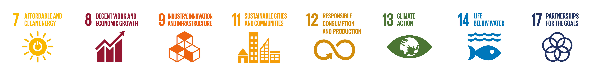
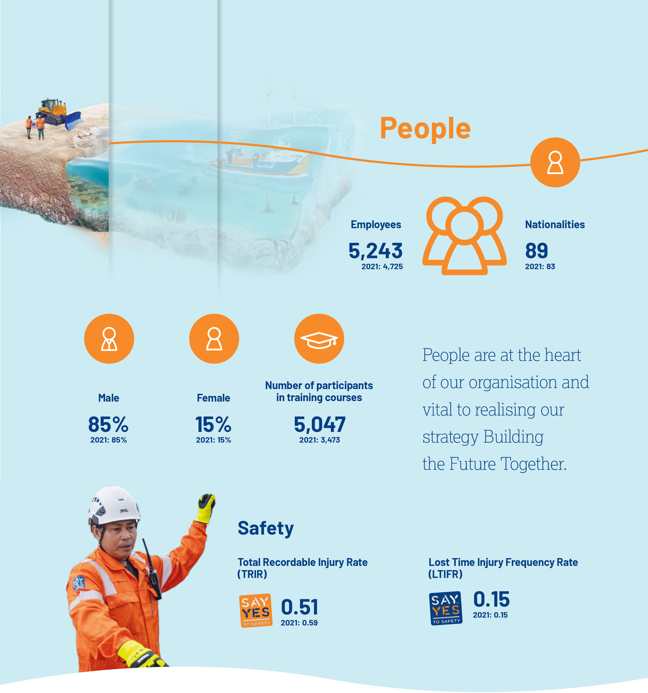
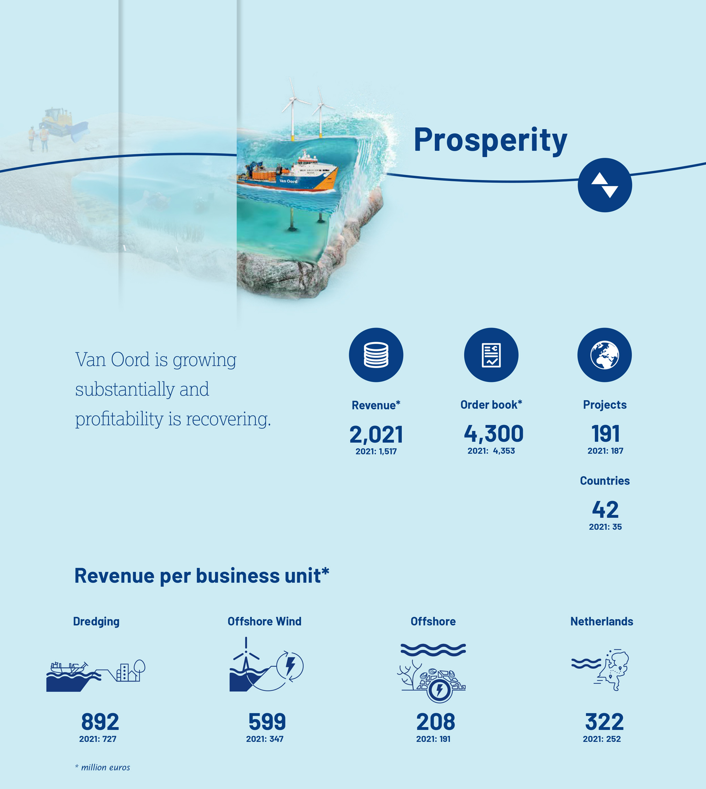

Introduction
Key figures
(all amounts in million euros)
| 2022 | 2021 | 2020 | 2019 | 2018 | ||
| People | ||||||
| No. of employees in full-time equivalents at 31 December | 5,243 | 4,725 | 4,369 | 5,217 | 4,954 | |
| Ratio male/female % * | 85/15 | 85/15 | 86/14 | 85/15 | 86/14 | |
| Number of nationalities employed by Van Oord | 89 | 83 | 73 | 71 | 74 | |
| Number of participants in classroom training courses | 5,047 | 3,473 | 2,842 | 5,447 | 3,353 | |
| Absence due to illness (in % of Dutch payroll) * | 4.2 | 3.9 | 4.1 | 4.2 | 4.0 | |
| Accident frequency in TRIR * | 0.51 | 0.59 | 0.48 | 0.65 | 0.67 | |
| Accident frequency in LTIFR * | 0.15 | 0.15 | 0.18 | 0.23 | 0.18 | |
| Planet | ||||||
| Total installed renewable energy capacity (MW) | 930 | 1,142 | 2,842 | 1,850 | 846 | |
| Scope 1 greenhouse gas emissions (tonnes x 1,000) * | 475.3 | 390.1 | 472.2 | 534.3 | 481.8 | |
| Development relative scope 1 emissions (tCO2e/million EUR revenue) | 235.2 | 257.2 | 281.6 | 325.0 | ||
| Prosperity | ||||||
| Net revenue | 2,021 | 1,517 | 1,677 | 1,644 | 1,876 | |
| EBITDA ** | 243 | 67 | 226 | 254 | 306 | |
| Depreciation and amortisation | 165 | 165 | 167 | 166 | 161 | |
| EBIT ** | 78 | -98 | 59 | 88 | 145 | |
| Net profit | 60 | -62 | 33 | 46 | 92 | |
| Total equity and liabilities | 3,039 | 2,738 | *** | 2,458 | 2,414 | 2,530 |
| Equity | 985 | 915 | 1,015 | 1,008 | 999 | |
| Long-term loans | 579 | 435 | 244 | 415 | 207 | |
| Cash | 400 | 373 | 268 | 108 | 287 | |
| Net debt | 178 | 62 | -24 | 307 | 78 | |
| Order book ** | 4,300 | 4,355 | 3,553 | 3,610 | 3,676 | |
| Cash flow from operating activities | 62 | 50 | 476 | 30 | 128 | |
| Cash flow from investment activities | -187 | -98 | -120 | -222 | -120 | |
| Cash flow from financing activities | 143 | 174 | -191 | 10 | -34 | |
| Net cash flow | 19 | 126 | 165 | -181 | -26 | |
| Dividend | 35 | 0 | 16 | 21 | 40 | |
| Return on equity ** | 6.4% | -6.5% | 3.3% | 4.6% | 9.5% | |
| Return on capital employed ** | 4.7% | -6.2% | 3.6% | 5.5% | 9.3% | |
| EBITDA/net revenue | 12.0% | 4.4% | 13.5% | 15.5% | 16.3% | |
| Net profit/net revenue | 3.0% | -4.1% | 2.0% | 2.8% | 4.9% | |
| Equity/total assets (solvency) ** | 32.4% | 33.4% | 41.3% | 41.8% | 39.5% | |
* see list of terms
** see list of financial terms
*** comparative figures 2021 have been restated, reference is made to Revised accounting standards (see Notes to the consolidated financial statements)
Van Oord in brief
Our purpose
Our purpose is to create a better world for future generations by delivering Marine ingenuity.
Our mission
As a global marine contractor with over 150 years of experience, we focus on dredging and marine construction, offshore wind, offshore infrastructure, and infrastructure in the Netherlands. We work safely and partner with our clients and stakeholders to create innovative and sustainable solutions.
Our values
What drives us internally and externally:
Founder's mentality
We are a Dutch family-owned company with over 150 years of experience as an international marine contractor. Marine ingenuity is our signature and the spark that lights the spirit of our professionals. It drives our pursuit to make the world a better place for future generations. In 2018 Van Oord received the right to use the Royal designation. It crowns the more than 150 years of entrepreneurship, spirit and perseverance displayed by our predecessors and employees.
Ownership
Shareholders Van Oord N.V.
MerweOord B.V.
ConsOord B.V.
Ulran S.A.
6 Market drivers
Our 8 UN Sustainable Development Goals
These 8 goals reflect Van Oord's main business drivers and impact areas.


For more information, see The Right People chapter.
Locations
Europe | Azerbaijan - Baku, Belgium - Sint-Niklaas, Cyprus - Nicosia, Denmark - Copenhagen, Finland - Kokkola, France - Villepinte, Germany - Hamburg, Gibraltar, Ireland - Dublin, Italy - Rome, Kazakhstan - Aktau, Netherlands - Gorinchem - Rotterdam - Bolsward, Norway - Oslo, Poland - Warsaw - Gdansk, Portugal - Lisbon, Romania - Constanta, Spain - Madrid, United Kingdom - Small Dole - Stokesley America | Brazil - Rio de Janeiro, Canada - Calgary, Colombia - Bogota, Curaçao - Willemstad, Guyana - Georgetown, Mexico - Mexico City, Panama - Panama City, Peru - Lima, United States - Houston - Dover (Delaware) Africa | Angola - Talatona-Luanda, Egypt - Suez, Mozambique - Maputo, Nigeria - Ikeja-Lagos, Senegal - Dakar Middle East & West Asia | Bahrain - Manama, India - Mumbai, Qatar - Doha, Turkey - Istanbul, United Arab Emirates - Dubai - Abu Dhabi - Ras Al Khaimah - Umm Al Quwain Asia & Australia | Australia - Milton, China - Shanghai, Hong-Kong, Indonesia - Jakarta - Batam, Japan - Tokyo, Korea - Busan, Malaysia - Kuala Lumpur, Maldives - Male, Philippines - Manila, Singapore, Taiwan - Taipei, Thailand - Bangkok, Vietnam - Hanoi
For more information, see the Sustainability chapter.
* Including the Greater Changhua 1 & 2a project. By the end of 2022, all 111 infield cables were installed and the project neared completion. The full scope of work will be completed in 2023.
For more information, see the World of Van Oord chapter.
The world in 2022, a turbulent year
2022 was a year of growth and recovery from an operational and profitability perspective. We realised a substantial increase in our revenue and got back in control on a number of complex projects. Profitability was restored while handling severe supply disruptions and price increases.
2022 was one of the most turbulent years in our company's 154-year history. Due to COVID-19, there were many restrictions imposed on Van Oord in recent years: travel restrictions, quarantine requirements and, of course, concerns around the health of our people. Fortunately, we saw that most restrictions were lifted over the course of 2022. The worldwide vaccination campaign made an important contribution to this.
On 24 February, the world was shocked by Russia's military invasion of Ukraine. This is a humanitarian crisis of unprecedented magnitude, a war in Europe with so far more than 100,000 casualties. It is the largest military conflict in Europe since World War II. The direct and indirect effects on our company have been substantial. We ceased all our activities in Russia and the projects in our order book have been cancelled. Where necessary, we have been able to support our Ukrainian crew members with, among other things, providing accommodation outside Ukraine. We have also seen employees of both Ukrainian and Russian nationalities work together on projects and vessels.
As a result of the war in Ukraine, we were confronted with disruption in our supply chains worldwide, which led to high inflation and price hikes for certain products. Some supplies were not available and this led to project delays. Where we were contractually unable to pass on these increases to our clients, we entered into discussions with clients for compensation. This has cost the company tens of millions of euros in 2022. As a result of these worldwide price increases and rises in interest rates, the economy has cooled considerably and there is the threat of stagnation and, in some of our markets, even of recession. We also saw a lot of turbulence in the world of energy in 2022. As a result of Russia stopping gas supplies to Europe and overdue investments in energy infrastructure, gas and electricity prices exploded in Europe.
Politicians in Europe overwhelmingly supported energy independence from Russia, which led to a flood of new plans regarding the realisation of renewable energy projects. This mainly concerned offshore wind projects. In Esbjerg, for example, there was a commitment made between Denmark, Germany, the Netherlands and Belgium to have 60 gigawatts of offshore wind installations by 2030 and to work towards 150 gigawatts of capacity installed by 2050.
Governments and companies also gave resolute pronouncements on the achievement of the Paris targets: CO2 neutral by 2050. Van Oord has endorsed the Paris targets and also committed itself to being CO2 neutral by 2050. However, despite all efforts in the field of renewable energy, we saw CO2 emissions in the world rise slightly in 2022 as a result of the starting up of coal-fired power stations. We are increasingly confronted with the energy trilemma: to find a balance between sustainability, security and affordability.
2022 was one of the most turbulent years in our company's 154-year history.
Market
Our markets recovered in 2022 in line with our expectations, with the exception of the Dutch infrastructure market, about which we are less optimistic due the ongoing nitrogen crisis, combined with the impact of cost increases on clients' budgets. Many experts believe that the world is on the verge of a raw materials 'supercycle', which means a shortage of many raw materials. This not only concerns oil and gas, but also the materials needed to realise the energy transition, such as steel, copper and aluminium. This will lead to structurally high prices for these raw materials and is also expected to lead to a wave of new investments during this decade.
New LNG ports, offshore gas and offshore wind projects provide growth potential for our business. Offshore wind will become a very important source of energy in North-West Europe in the coming decades, and we expect this to grow exponentially. In 2022 we also saw a recovery in the investments in fossil fuels. This is expected to be a temporary upturn. Gas will remain relevant as a transition fuel in the coming years. The energy transition is moving forward and will see an early acceleration, especially by countries that depend on fossil fuel imports. Van Oord will remain active in the oil and gas market in the coming years and will further increase its share in the renewable sector.
Despite major investments in renewable energy, the wind energy industry is facing serious financial challenges. There is a combination of factors causing unhealthy market conditions for this industry. Market imbalance (supply and demand), supply chain disruptions, geopolitical tensions and COVID-19 are making market conditions unprofitable for many parties including Van Oord.
Revenue, result and balance sheet
At EUR 2.0 billion, our revenue in 2022 was significantly higher than in 2021 (EUR 1.5 billion). We saw revenue growth in all our business units and a strong increase in the level of our activities in the Offshore Wind business unit in particular. We were able to successfully complete nearly 200 projects for our clients.
Our net result recovered to EUR 60 million after the net loss of EUR 62 million in 2021. All our business units were profitable, with the exception of Offshore Wind. The loss for Offshore Wind was due to price increases in the supply chain which we could not pass on to our clients, and the aftermath of some loss-making projects taken on in 2020 and 2021. The Dredging and Offshore business units achieved good results. The Netherlands business unit closed the year with a small positive result, and we were able to settle claim positions on a number of projects in 2022. This was very important in the recovery of our profitability.
In 2022 we took on new work for a net amount of EUR 2.0 billion. The gross award volume amounted to EUR 2.6 billion, however a number of old projects was removed from our order book — this mainly concerned projects in Russia and Angola. We saw a high volume of awards in Dredging and Offshore, although the award volume in the Offshore Wind business unit lagged behind. Our order book remained stable at EUR 4.3 billion. Our operating cash flow was EUR 62 million in 2022 compared to EUR 50 million in 2021. The net debt position increased from EUR 62 million at the end of 2021 to EUR 178 million at the end of 2022 driven by investments. Our leverage ratio is 0.9. We are once more ending this year with a strong position on the balance sheet.
Given our ambition for profitable growth heading towards 2030 and the associated investment volume, we are not yet at the desired level. However, the return on capital employed improved to 4.7% in 2022 and is therefore on the way to recovery.
We saw a high volume of awards in Dredging and Offshore.
Investments
Our first LNG trailing suction hopper dredger Vox Ariane became operational in 2022. The official launch took place at the Wilhelminapier in Rotterdam, a place well known to us, and we are very satisfied with the Vox Ariane's operational performance. In 2023 its 2 sister ships, the Vox Apolonia and the Vox Alexia, will enter service and our new cable-laying vessel Calypso will also become operational end of summer 2023. This ship is equipped with 2 cable carousels, which makes it suitable for laying HVDC cables (high voltage direct current). These cables will play an important role in offshore wind farms, especially those located further from the coast.
In 2022 we began the construction of our new offshore installation vessel Boreas. This jack-up offshore installation vessel is being built in Yantai (China). The crane, which can lift more than 3,000 tons, is being built at Huisman in China. We are pleased to say that the COVID-19 travel restrictions to China have been lifted, which will make construction easier. In addition, we ordered 2 more state-of-the-art water injection dredgers. These 2 WIDs will once more be built by Kooiman in Zwijndrecht. The design is based on the previously commissioned WIDs Maas and Mersey.
Our goal is to be climate neutral by 2050. On all our new ships, we are investing in the latest engine technology which will (in time) be able to run on the fuels of the future (methanol, ammonia, biofuels and hydrogen). At the moment, it is not yet clear which fuels will eventually be available for the shipping industry. The entire investment programme has been allocated more than 800 million euros.
Organisation
Our organisation is growing rapidly as a result of the market recovery. At the end of 2022, Van Oord had 5,243 employees (in FTE). Over the past year, our net workforce has increased by over 500 FTEs. As a result of the good labour market in North-West Europe, we see that staff turnover is higher than during the previous decade. This led us to expand our recruitment drive and we were able to take on many new employees. In the autumn of 2022, we conducted another employee engagement survey and were satisfied with the results, which were significantly better than the year before. With the help of these employee engagement surveys, we can see the areas in which our personnel policy still needs improvement.
In 2022 our employees' main concern was the wages policy. Due to the high inflation in 2022, market-based remuneration will be an even higher priority. Given the importance of our HR strategy, we appointed a Chief People Officer in the Executive Committee in 2022, Meike Salvadó-de Reede.
In terms of content, a great deal of attention was devoted to the lessons learned programme, in which subjects like risk management, quality assurance and balance of power were greatly improved. An important part of our HR strategy is the work of being a high-performance organisation. Part of this is an extensive leadership programme, which we developed together with IMD and are currently implementing.
Sustainability and safety
Major steps were taken in 2022 regarding sustainability. Within the 4 business units, we paid a lot of attention to making this concrete in the tenders, projects and implementation. There is a lot of variation, from incorporating Building with Nature solutions in the design and implementation phase to sustainability requirements in the supply chain, up to and including the use of biofuels to reduce emissions. Sustainability is also finding its way into the investment programme, particularly of the fleet. In 2022 we committed ourselves to a 1.5-degree pathway in line with Science Based Targets Initiative (SBTi) Maritime Guidance to tackle the reduction of Emissions in our scope 1, 2 and 3.
The S.E.A. programme (Sustainable Earth Actions) is running company wide, with 4 focal points directed at: accelerating climate actions, enhancing the energy transition, empowering nature and communities, and our approach to the decarbonisation of our business activities, ultimately working towards net-zero emissions by 2050. This is an important assignment which will mean tackling various uncertainties. We are motivated to work on this with various parties.
Our safety statistics showed a positive improvement in 2022 compared to 2021 (TRIR 2022 0.51 versus TRIR 2021 0.59). The nature of our work entails major risks for our employees and there has been a continuous effort over the past 2 decades to take our safety culture to a higher level. We will keep working on the continuous improvement of this culture. Our experience has taught us that you should never be complacent with your performance when it comes to safety.
Business units
Dredging
In 2022 we saw the continuation of the clearly observable market recovery. Revenue increased from EUR 727 million in 2022 to EUR 892 million. The occupancy rate of the trailing suction hopper dredgers in particular was considerably better than in 2021. The gross award and variation order volume was significantly higher than in 2021, at EUR 1.4 billion. The net award volume amounted to EUR 896 million versus EUR 843 million in 2021. The results, including income from settlements, in Dredging were satisfactory.
The business unit won new projects in the field of climate adaptation in countries such as Romania and the Maldives. The access channel with associated nature islands in Szczecin (Poland) was successfully completed.
Offshore Wind
The revenue of our Offshore Wind business unit rose sharply in 2022 (EUR 599 million in 2022 versus EUR 347 million in 2021). On the Saint-Brieuc project, foundations were drilled into the bedrock at a total of 41 locations. We expect to complete the project in 2023. We neared completion of the Greater Changhua project, although we experienced a lot of restrictions because of COVID-19. Due to difficult market conditions and price increases in the supply chain (also as a result of the war in Ukraine), there are insufficient returns both for us and for the sector as a result of which the business unit incurred a loss in 2022. In view of the importance of offshore wind in the energy transition, this situation is untenable. In 2022 we experienced a cautious market recovery, but we need a better balance between reward and risk. The award volume in 2022 was significantly lower than in 2021 (EUR 339 million versus EUR 962 million in 2021). In December 2022, we received a provisional award for the Hollandse Kust West project, which has not yet been included in our order book. The utilisation of offshore wind vessels in 2022 was high.
Offshore
Revenue in the Offshore business unit was slightly higher in 2022 than in 2021 (EUR 208 million in 2022 versus EUR 191 million in 2021). The results were satisfactory. The utilisation rate of our fallpipe vessels was higher than in 2021. Subsea rock installation on offshore wind farms is now the fastest growing market for our fallpipe vessels.
The important Golfinho project in Mozambique was suspended throughout 2022. The award and variation orders were significantly higher in 2022 than in 2021 (EUR 498 million in 2022 versus EUR 367 million in 2021). Projects in Russia were taken out of the order book.
The Netherlands
The risks we have seen in large-scale complex works — such as in the DBFM market — have forced us to take a more selective approach. The legal proceedings regarding nitrogen emissions have also caused significant delays in the preparation and implementation of the necessary infrastructure. The tender volume in the Netherlands was low in 2022, and we do not expect this to change any time soon. The government will have to take a critical look at its policies and procedures if it wants construction projects to remain viable in the Netherlands.
Revenue of the Netherlands business unit in 2022 was considerably higher than in 2021 (EUR 322 million in 2022 versus EUR 252 million in 2021) and the business unit realised a positive result in 2022. Mid year an agreement was signed with client Rijkswaterstaat on the impact of the changes in the hydraulic preconditions of the Afsluitdijk project. At the end of the year, the availability certificate was obtained for this iconic project and an important part of the work has now been successfully completed. We are particularly proud of the speed with which the Afsluitdijk has been made high water safe on both the Wadden Sea side and the IJsselmeer side.
Due to the nitrogen problem in the Dutch construction market, hardly any major infrastructure projects are being tendered and awarded. It is still unclear whether the ViA15 project will go ahead. The government has agreed to a compensation scheme for contractors involved in large (DBFM) infrastructure projects for cost increases. We have expressed our satisfaction with this. The award volume, including variation orders, was EUR 255 million in 2022 versus EUR 163 million in 2021.
Strategy and outlook
Our actions this decade have been based on our strategy Building the Future Together. In this strategy, we continue to focus on a portfolio of synergetic activities as a marine contractor. The starting point of this strategy is profitable growth. We are confident that our business will continue to grow this decade, supported by significant developments in our markets. The energy transition and climate adaptation are the 2 biggest factors driving this growth. We have the intention to reposition our organisation and merge from 4 to 2 business units in 2023. We will create 2 sizeable business units, Offshore Energy to accelerate the energy transition and Dredging and Infra to boost coastal and marine infrastructure to drive climate adaptation solutions.
In the short term, the uncertainties in our markets remain high. World economic growth in 2023 will be significantly lower than previously predicted. The risk of further stagnation or even a global economic recession has seen a considerable increase due to high inflation and rising interest rates, and geopolitical uncertainties can also have a major impact on our performance.
Despite the above, we expect a revenue increase in 2023 and a further improvement in our margins. We are still carrying out a few large projects that were awarded in the years where the risk-reward balance was not healthy. We expect our order book to increase further this year, mainly due to the growth of the offshore wind markets. We will continue to invest in the renewal and sustainability of our fleet in 2023 and the years thereafter. With our people's commitment, resilience, knowledge and competences, combined with a modern and efficient fleet, we have every confidence in the market opportunities of the coming years.
With our people's commitment, resilience, knowledge and competences, combined with a modern and efficient fleet, we have every confidence in the market opportunities of the coming years.
2022 was also marked by a return to normal life after the pandemic. We especially want to give thanks to our colleagues on vessels and projects. They went through difficult and uncertain times during COVID-19 and are therefore owed special recognition for their work and involvement within the company. We also thank our many clients who made it possible for us to continue and complete project work during the COVID-19 period. As a company, we look forward to the future with confidence.
Rotterdam, 10 March 2023
Pieter van Oord
A year of recovery
The Supervisory Board independently monitors the performance of the Executive Committee and the general state of affairs of the organisation, taking into account the interests of all stakeholders. The Supervisory Board is closely involved in the organisation's key developments and major decisions.
The Supervisory Board focused on supporting the organisation in addressing several major challenges in 2022. The board continued to monitor the impact of COVID-19 on Van Oord's activities and reviewed the implications of the war in Ukraine and consequent supply chain disruptions and cost escalations. We reviewed developments related to Van Oord's withdrawal from Russia and closely monitored the approach to loss making projects on which a provision was recorded in 2021. While tackling these challenges, we dedicated significant time to strategy and planning.
Internal organisation
In 2022 Van Oord managed to gain back control over the most complex projects, implement insights gained from previous experiences and use that knowledge to efficiently resolve emerging challenges. By the end of the year, Van Oord's projects were progressing steadily, the demand for its capabilities was growing and its strategy Building the Future Together was taking shape.
The Supervisory Board worked extensively with the Executive Committee to advance the strategy. These efforts are paying off: Van Oord is growing substantially and profitability is recovering.
As Supervisory Board, we support and monitor the organisation's performance. Benchmarking plays an important role in this effort. We compare Van Oord to competitors and carefully assess the company's strategic plans against market trends. The insights strengthen our belief in Van Oord's strategy.
Supervisory Board Performance
The Supervisory Board had 6 regular meetings with the Executive Committee. The tender committee of the Supervisory Board visited the Constanta Beaches project site and attended the construction of the new cable-laying vessel Calypso at the VARD Tulcea shipyard in Romania. The visit to the shipyard follows the board's approval of the large investment programme in 2021. A delegation of the board also attended the launch of the Vox Ariane in Singapore.
Composition of Supervisory Board
The composition of the Supervisory Board remained unchanged. The members are Messrs Hoek, Laurent Josi, Kretzers, Valkier, Van der Ven, Verheul and Ms Insinger, whereby Mr Kretzers has been reappointed for another term of 4 years.
The composition of the Supervisory Board will change in 2023. After serving almost 11 years, Mr Van der Ven decided to step down from the Supervisory Board of Van Oord N.V. as of April 2023. Mr Sevinga will be nominated for appointment to the Supervisory Board in April 2023, in accordance with MerweOord's rights in the shareholders agreement.
Independence and conflicts of interest
The Supervisory Board independently monitors the performance of the Executive Committee and the general state of affairs of the company, taking into account the interests of all stakeholders. In the performance of their duties, the Supervisory Board is guided by the interests of the company and its affiliated enterprise.
Messrs Kretzers, Van der Ven and Verheul were appointed in accordance with MerweOord's rights as stated in the shareholders agreement, Mr Laurent Josi was appointed in accordance with Ulran's rights as stated in the shareholders agreement, and Messrs Hoek and Valkier were appointed in accordance with the Works Council's enhanced right of recommendation. Ms Insinger is a member of the Supervisory Board.
The Supervisory Board is committed to maintaining its independence and avoiding any possible conflicts of interest. If a potential conflict of interest does arise, the Supervisory Board member concerned absents him or herself from the meetings and decision-making.
Large Capital Expenditure Committee
The Supervisory Board's Large Capital Expenditure Committee considers investments in excess of EUR 100 million or those selected by the Executive Committee to be discussed. The members of the committee are Messrs Kretzers (chair), Valkier and Verheul. In 2022 the committee was involved in one large investment proposal that has not materialised so far.
Audit Committee
The Audit Committee reviews the company's finances, compliance and risk management. The committee meets 4 times a year in the presence of the CEO and CFO. Recurring topics are the quarterly and annual figures, the audit plan, the auditor's report, compliance and risk management and IT. Dividend, treasury and financing, tax and the finance transformation 2030 were topics that were also discussed. When relevant, other financial and risk officers are invited to attend the meetings. The external auditor attended 3 meetings in 2022. The committee members are Messrs Van der Ven (chair), Laurent Josi and Hoek.
Human Resources Committee
The Human Resources committee held 2 meetings in 2022 to advance the HR strategy The Right People. The committee advised on several topics, such as succession planning, the Organisational Health Index (OHI) scores and subsequent actions, and Diversity and Inclusion. The committee also reviewed the updated undesirable behaviour policy. In addition, Van Oord recruited a Chief People Officer (CPO), Meike Salvadó-de Reede, who will serve as a new member of the Executive Committee. In response to high inflation, the committee advised positively on an intermediate salary increase of 4% to support Van Oord's employees, after regular salary increases in early 2022 and in addition to salary increases that will take place in 2023. The members of the committee are Messrs Hoek (chair), Van der Ven, Valkier and Ms Insinger.
Tender committee
The Supervisory Board participated in the review of over 25 large or complex tenders. The tender review procedure was updated in light of the improved risk management framework. The tender committee now plays an important role in the evaluation of tenders for large projects, such as the Ain Sokhna dredging project in Egypt awarded to Van Oord in 2022. The members of the committee are Messrs Hoek (chair), Verheul and Kretzers.
Strategy
The Supervisory Board spent significant time on long-term planning in support of Van Oord's strategy Building the Future Together. The role of the board is to review the strategy and to challenge how Van Oord can best utilise its finite resources — from people to capital and technological capabilities — to reach its business goals. The board was involved in the decision of the Netherlands business unit to no longer pursue high-risk Design, Build, Finance and Maintain (DBFM) contracts. In addition, the board reviewed the long-term strategy for Offshore Wind amidst the surging demand for wind energy around the world. The acceleration of the energy transition also called for a review of the strategy for the Offshore business unit, resulting in the agreement that Van Oord will remain active in energy infrastructure projects — with a focus on gas as a transition fuel — for the coming years, while increasing the share of renewable energy infrastructure projects in its portfolio.
Sustainability
As part of Van Oord's strategy, the board paid extensive attention to the sustainability programme. The board supported and reviewed the programme and was regularly involved in conversations about the roll-out of the sustainability strategy, including an assessment of sustainability-related criteria for tenders, the pathway to net-zero emissions and new business opportunities. The board acknowledges that Van Oord can make an important contribution in the area of climate adaptation and in enhancing the energy transition. The stakeholder analysis performed, confirms that the focus areas chosen are in line with expectations of stakeholders.
Approval of annual financial statements
The annual financial statements have been audited by Ernst & Young Accountants LLP, and the independent auditor's report can be found in the 'Other information' section of this annual report. The Supervisory Board discussed the auditor's findings, co-signed the annual financial statements, and approved the Executive Committee's report in 2022. We propose that the General Meeting of Shareholders adopt the 2022 annual financial statements and a dividend payout of EUR 35 million, i.e. EUR 27 million based on the dividend policy and EUR 8 million exceptional and additional dividend. Ernst & Young Accountants LLP have also provided limited assurance on a number of quantitative measures relating to sustainability. The independent assurance report is attached to this annual report.
Outlook
We are pleased with Van Oord's transition and recovery in 2022 and the ability to overcome challenges and learn from them. Van Oord ends the year with a net positive result, which is an achievement given the setbacks experienced in light of the pandemic and the impact of the war in Ukraine on the supply chain and costs.
The year ends with a well-filled order book. Van Oord's margins are improving, risk provisions are adequate, and the company is in a strong position to return to healthy profit levels. We would like to thank all Van Oord employees for their contribution, flexibility and support which led to the achieved result.
We spent significant time in 2022 on reviewing the translation of the 2030 strategy Building the Future Together into long-term plans, and we are confident in Van Oord's ability to capitalise on the opportunities in its markets.
We will continue to monitor the strategy and keep our sights set on the bright future ahead for Van Oord.
Of course we should remain vigilant. Van Oord is executing very challenging projects and often in tough environments. That is the nature of its work. There will always be unexpected challenges, and we will address them as they arise. At the same time, we will continue to monitor the execution of the strategy and keep our sights set on the bright future ahead for Van Oord.
Rotterdam, 10 March 2023
On behalf of the Supervisory Board,
Niek Hoek, Chair
World of Van Oord
Dredging
The Dredging business unit further improved its performance in 2022. The markets proved resilient in the face of the war in Ukraine and continued to recover. Van Oord won tenders for large-scale projects in Romania, Egypt and the Maldives. Sustainability and nature-based solutions play an important role in many of our projects. We achieved higher revenue and maintained a solid profitability level.
Key figures
In 2022 the Dredging business unit increased revenue levels. The continued recovery of the markets, improved fleet occupancy, income from settlements, and strong award volumes contributed to our solid results. We executed and completed complex projects, overcame challenges and delivered high-quality work. New awards will build on our strong track record in sustainable and nature-based solutions, in line with our corporate strategy Building the Future Together.
Awarded contracts
Constanta Beaches Phase 3
After participating in a 2-year European tender process for the Constanta Beaches Phase 3 project in Romania, we were awarded contracts for 3 out of the 6 tendered lots. The project involves the design, engineering and construction of groynes and beaches along 6 kilometres of coastline. These new groynes and beaches will protect the area against the waves of the Black Sea. In addition, the reinforcement of the coast is important to the tourism sector and livelihoods of local communities.
In line with our corporate Sustainability strategy, we will deploy nature-based and nature-friendly solutions. Several of the current breakwaters will be removed and replaced with more sustainable alternatives. In addition, the project includes the planting of various species of seagrass and algae to enrich marine life. The design phase is underway, and construction will start in late 2023. Previously, Van Oord was also awarded the Constanta Beaches Phase 2 project, which was nearing completion by the end of 2022.
Ain Sokhna Port
We were awarded a large contract for the Ain Sokhna Port in Egypt. We will deploy a large cutter suction dredger and a fleet of sand carriers for the deepening and expansion of the port. In the future, a high-speed railroad will connect the Ain Sokhna Port with the Port of Alexandria in order to bypass the Suez Canal. In addition, the Ain Sokhna Port will be expanded with a large hydrogen plant, which will provide renewable fuel for vessels. The dredging work is set to begin in the second quarter of 2023 and is expected to take 2 years.
Addu City
April 2022, we signed a contract to reclaim and create 194 hectares of land in Addu City, Maldives. The reclamation works are part of the Addu Development Project, which addresses climate change while increasing economic opportunities in the region. Van Oord will provide climate adaptation solutions to protect Addu City from rising sea levels. By reclaiming land for housing, economic development and tourism, we help safeguard the future of the area's 34,000 inhabitants.
Addu City is located in an ecologically sensitive area. Van Oord's extensive track record in the relocation and rehabilitation of coral reefs played a major role in the award decision. We will leverage our expertise and work with local stakeholders to relocate coral and associated species — 70,000 colonies — from the reclamation area prior to project execution. Next we will install 11 kilometres of shore protection using geotextile tubes in addition to rock.
Projects in progress and completed
Fehmarnbelt Fixed Link
We continued work on the Fehmarnbelt Fixed Link between Denmark and Germany. When completed, Fehmarnbelt will be the world's longest immersed road and rail tunnel. The project is one of our most complex to date. It involves dredging an 18-kilometre trench in the seabed and reusing the dredged material to create a recreational nature reserve. The seabed is characterised by many types of soil, including stiff glacial clay, requiring a wide range of equipment. The project is expected to be completed in 2024.
Harwich approach channel and harbour
Harwich deepening project was well underway in 2022. The United Kingdom's withdrawal from the European Union has contributed to increased trade flows. The deepening of the Harwich approach channel will increase transportation capacity by allowing larger vessels to enter the harbour. The difficult soil conditions required us to be agile, to modify our vessels to the local circumstances and design a large plough to level the dredged areas. We were well prepared to take on this large and challenging project, which will be completed in the summer of 2023.
Kashagan offshore field
We completed a technologically complex project for the Kashagan offshore field in Kazakhstan. Dredging plays an important role in facilitating transport between the network of artificial islands in the offshore field due to declining water levels in the Caspian Sea. Favourable weather conditions gave us an early start to the 2022 season. We overcame some of the difficulties we experienced in 2021, were well organised and delivered the project on schedule.
Świnoujście-Szczecin fairway
In Poland, we completed a project to deepen and widen the 62-kilometre-long channel from Świnoujście to Szczecin. The Szczecin project included the creation of 2 nature-based islands that will serve as natural habitats for flora and wildlife. The project involved more than 2.5 million working hours and was completed without any accidents resulting in absence, contributing to our strong Lost Time Injury Frequency Rate (LTIFR) record.
Fleet renewal
The christening of trailing suction hopper dredger Vox Ariane took place in June in Rotterdam, the Netherlands. The Vox Ariane is the first of 3 new 10,700 cubic metre LNG dual-fuel hopper dredgers that will make our fleet more energy efficient and sustainable. The vessel is currently working on the Elbe River maintenance project in Germany. The christening of the second vessel, the Vox Apolonia, is scheduled for March 2023.
Due to the success of the new Maas and Mersey vessels, which were inaugurated in 2021, we ordered 2 additional hybrid water-injection dredgers. The vessels feature large battery packs and are driven by new engine technology, which reduces our emissions. The first vessel will be commissioned early 2024.
New way of working
We initiated the Our New Way programme in 2021, as changed market conditions, revised strategic objectives and organisational changes required a new way of working within the Dredging business unit. The programme seeks to improve collaboration and encourage open communication and feedback. By improving our collaboration, we build on our strong foundation: the quality of our people, our collective experience and expertise, and innovative ideas.
Subsidiaries
Van Oord's soil improvement subsidiary, Wicks, remained very active on projects in Europe, the Middle East, Abu Dhabi and Nigeria and achieved good results. Dravo, Van Oord's Mediterranean subsidiary, was awarded a large tender for the upgrading of beaches in Valencia, Spain. Dravo has significant experience in beach maintenance and nourishment and was previously involved in large-scale beach maintenance projects. Mackley, Van Oord's civil construction subsidiary in the UK, continued their coastal construction projects, predominantly in the south of the country.
Climate Adaptation Action Plan
The Dredging business unit plays an important role in Van Oord's Climate Adaptation Action Plan, which aims to provide solutions that protect coastal societies and ecosystems most at risk from climate change. These solutions include the construction of breakwaters and beach nourishment to enrich the environment and drive economic activity, thereby increasing the welfare of local communities. Where deemed beneficial, the ecosystem is further enhanced, for example through coral rehabilitation and the planting of seagrass.
In 2022 we hired a new director for project development to lead a dedicated team of specialists to work on new business activities, such as climate adaptation. Seeing that climate adaptation projects often require a short-term investment in order to achieve a long-term benefit, Van Oord is actively exploring exclusive partnerships with clients to develop new financing models. For example by partly funding a project through the development of sustainable tourism. In addition, we are discussing the opportunity of customised maintenance contracts with our clients. These are long-term contracts for sustainable port maintenance.
Outlook
We are optimistic about the future. Our order book is well filled, and we will continue to see more activity in 2023 as a result of ongoing projects, new awards and a growing tender volume.
As a frontrunner in sustainability, we expect growth over the years. Our investments in a more energy-efficient fleet, increasing use of biofuel and development of new business provide new opportunities for our business unit. As clients accelerate their carbon reduction efforts, they are increasingly considering their scope 3 emissions. We are uniquely positioned to help our clients achieve their sustainability objectives, making us a partner of choice for years to come.
In the long term, the expansion of the economy and global trade present many avenues for growth. We expect a high demand for marine infrastructure to accommodate larger vessels. In addition, worldwide the population is shifting from rural areas to urban areas, and particularly to cities in low-lying coastal areas. Those cities can only expand in the direction of the sea, requiring large-scale reclamation works.
Leveraging our solutions and expertise, our business unit's aim is to contribute to economic growth, help mitigate the effects of climate change and support the energy transition globally.
Offshore Wind
Activity in the offshore wind market remained very high in 2022. The energy crisis accelerated the energy transition, and countries around the world committed to large investments in wind energy. As a result, the Offshore Wind business unit continues to adjust its growth projections upward. Its improved operational performance in 2022, combined with the increasing tender volume point towards a brighter future.
Key figures
The Offshore Wind business unit's operational performance improved in 2022, but a better balance between risk and reward is needed. Due to difficult market conditions and big price increases in the supply chain, there are insufficient returns both for Van Oord and for the sector as a whole. This resulted in a loss for Offshore Wind in 2022, but we see the balance between risk and reward improving in our order portfolio.
At the end of 2022, all projects in execution were under control. The complex Saint-Brieuc project in France was progressing well, thanks to the outstanding work of everyone involved. After experiencing extensive delays due to COVID-19-related travel restrictions and quarantine requirements, we neared the completion of the Greater Changhua project in Taiwan. Moreover, we reached financial settlements with both clients to partly offset the costs incurred as a result of technical challenges and delays.
Although Van Oord already anticipated and planned for an acceleration of the offshore wind market, the energy crisis that followed the invasion of Ukraine only intensified these developments. Our growth projections are materialising, and offshore wind is becoming a truly global business. A growing share of our business is also coming from outside of Europe.
Clients all over the world are seeking our expertise and capabilities to achieve their wind energy ambitions. We carefully assess the opportunities in the market against the risks involved. Simultaneously, we continue to adjust our growth projections upward when required.
Awarded contracts
Van Oord was selected as the preferred contractor for the construction of the Hollandse Kust West wind farm and for the construction of the Baltic Power wind farm. For the Baltic Power wind farm, we will be responsible for the transport and installation of more than 70 foundations, each consisting of a monopile and transition piece. The 1.2 GW wind farm will deliver renewable energy to more than 1.5 million Polish households.
In addition, Van Oord became the preferred contractor for the 300 MW Windanker offshore wind farm in the Baltic Sea. The Windanker project will become part of Iberdrola's Baltic Hub in Germany, which also includes the Baltic Eagle wind farm project awarded to Van Oord.
Vestas awarded our MPI Offshore organisation a contract for a maintenance and blade replacement campaign of their wind farms throughout Europe. The offshore installation vessel MPI Adventure is executing the work and is, together with the MPI Resolution, ideally suited for Operations & Maintenance (O&M) activities.
Ongoing and completed projects
Hollandse Kust Noord
We experienced a successful start of the Hollandse Kust Noord project. Van Oord is responsible for the engineering, procurement, construction and installation of the foundations and inter-array cables, and the transport and installation of the wind turbines. We installed the first monopile foundation in October 2022 and completed the installation of 70 monopiles in February 2023, approximately 10 weeks ahead of schedule. This is a testament to the expertise and experience of our project teams. To prevent erosion, we employed our fallpipe vessel Nordnes to install scour protection. The project is expected to be completed in 2023.
Saint-Brieuc
The Saint-Brieuc project progressed well in 2022. The extremely hard soil turned out to be a challenge to our equipment and our expertise, resulting in a 1-year delay. We overcame these tough conditions through extensive problem solving and testing. The project is now back on schedule and under control. By the end of 2022, 41 foundation piles and 24 jacket foundations were completed. In 2023 we will install an additional 22 foundation piles and 38 jacket foundations. The installation of foundations under these difficult circumstances was a first for Van Oord. Thanks to the learning curve, we are delivering true Marine ingenuity and completing one of our most complex projects.
Sofia
Preparations for the Sofia offshore wind farm were well underway in 2022. Van Oord was contracted for the engineering, procurement, construction and installation of the monopile foundations and inter-array cables. The design was completed and certified in 2022. We experienced significant cost increases related to COVID-19 and the war in Ukraine. Fabrication of the foundations and inter-array cables will begin in 2023. The Aeolus will perform the installation, which is scheduled for early 2024. In December 2022, work began to upgrade the Aeolus.
Baltic Eagle
The Baltic Eagle offshore wind farm project was under preparation in 2022. Van Oord was contracted by Iberdrola for the transport and installation of the foundations, and for the supply, transport and installation of the inter-array cables. The project involves the burying of cables in very soft soil, for which our trencher Dig-It will be customised. We will deploy our heavy-lift installation vessel Svanen to install the 50 foundations starting in summer 2023.
Taranto
We completed the installation of Italy's first offshore wind farm — and the first of its kind in the Mediterranean — in 2022. The Taranto Offshore Wind Farm is fully up and running. The wind farm consists of 10 wind turbines for a total capacity of 30 MW.
Greater Changhua
The Greater Changhua project was nearing completion by the end of 2022 after being severely hampered by COVID-19 and consequent travel bans. Van Oord is responsible for the transport, installation and burial of 111 inter-array cables and 3 export cables. The remaining activities will be carried out in 2023.
Vattenfall Operation & Maintenance
We are in the first year of a 4-year Operation & Maintenance (O&M) contract for Vattenfall. The project is being executed through our MPI Offshore organisation. We are providing jack-up and associated lift services for main component changes across Vattenfall's portfolio of offshore wind farms. The contract includes planned and unplanned maintenance campaigns for approximately 600 Vattenfall wind turbine generators.
Borssele V wind farm shares sold
The Two Towers consortium, which includes Van Oord, sold off its shares in the Borssele V wind farm in 2022. It is our strategy to divest our developments once completed. The project involved the testing and demonstrating of innovative technologies. In 2020 Van Oord successfully installed the world's first Slip Joint foundation in the Borssele V wind farm, a new method for the securing of turbine foundations, and introduced technologies for the protection of biodiversity surrounding the turbines. Our goal is to implement and scale up the Slip Joint method. We will continue to monitor and analyse the use of the Slip Joint at Borssele V for research and development purposes.
Sustainability
Utilising our knowledge of Building with Nature, Van Oord and its partners De Rijke Noordzee and Eneco installed 4 broodstock structures at the Luchterduinen wind farm. These oyster tables feature a special design and construction to provide a stable breeding place. Van Oord leveraged its knowledge of oyster tables from past offshore wind projects to develop this nature-inclusive solution. It is our ambition to apply this innovative method on a larger scale in order to contribute to the health of marine ecosystems while contributing to the energy transition.
Marine ingenuity Award
Our business unit received the Van Oord 2022 Marine ingenuity Award, an internal award which rewards ideas that are successful, innovative and sustainable and result in lower costs and/or more profit. We received the award for our Rehearsal of Concept (ROC) drill. By visualising and rehearsing complex projects during the tender phase using 3D-printed scale models of equipment, the project team gains a shared understanding of the project and its challenges early on. The ROC team organised 25 drills in 2022 and plans to scale up to 50 drills in 2023.
Outlook
In 2022 we saw a turnaround in the offshore wind market. The risk-reward balance of new tenders is much better than in previous years.
The projects that we are taking on today will start in 3 to 4 years' time. The long lead times of our projects enable us to forecast and plan ahead. We know what our outlook is for 2023 and for much of 2024. Based on that, we can confidently say that the Offshore Wind business unit will play a major role in the future of Van Oord. Our pipeline is filling up, which allows us to be more selective in the projects that we take on. Getting The Right People in place and maximising the occupancy of our equipment remain key priorities moving forward. By continuing to lend our expertise to climate adaptation and the energy transition, we contribute to our strategy Building the Future Together.
Offshore
The Offshore business unit provides integrated solutions for marine energy infrastructure. In 2022 the demand for infrastructure to accelerate the energy transition soared. In addition to preparing and executing our ongoing and newly awarded projects, we adapted quickly to the growing tender volume by expanding our resources. We saw recovery of our markets in the second half of 2022.
Key figures
The energy infrastructure market has been volatile for years. When we drafted our business unit strategy in 2019, in line with our corporate strategy Building the Future Together, we anticipated a future much less reliant on fossil fuels. Within coastal energy infrastructure, we expected a shift from traditional to renewable energy. Within subsea rock installation, that shift was already underway.
Since the start of the war in Ukraine, that shift has accelerated and so has the growth of our markets. The tender volume in subsea rock installation grew exponentially in 2022, requiring us to be selective and to focus on the projects that best align with our strategy. The 2022 award volume was 1.5 times higher than in 2021. We won tenders for large offshore wind developments in the United States and large-scale maintenance projects on the North Sea. Our business unit also remains dedicated to delivering high-quality and innovative solutions for the traditional energy market, as oil and gas will remain part of the energy mix for the foreseeable future. In 2022, we were awarded contracts for large pipelaying projects in Guyana, Mexico and Australia.
The current market conditions, in which demand exceeds supply, enable us to engage in conversations with our clients about how we deliver value. We have built strong relationships with our clients over the years, and we are having open discussions about how we can best incorporate environmental, social and governance aspects into our work. We proactively pursue opportunities to accelerate climate actions and empower nature and communities, for example by including research-based solutions for enhancing biodiversity in our project proposals.
Awarded contracts
Gas to Energy
Van Oord and Subsea7 were awarded the Gas to Energy project in Guyana in 2022. The consortium scope covers the project management, engineering and installation of approximately 190 kilometres of natural gas pipeline in water depths of up to 1,400 metres. The project will positively contribute to the development of Guyana's electricity supply, which in turn will reduce Guyana's dependence on imported fuels. We will deploy our shallow water pipelay barge Stingray in water depths of up to 28 metres and begin operations in mid-2023.
Darwin Pipeline Duplication Project
In September 2022, Allseas awarded Van Oord and DEME the Darwin Pipeline Duplication Project located offshore Northern Australia. The joint venture will support the installation of a shallow water pipeline in Northern Territory waters. Van Oord will be responsible for trenching, backfilling and the installation of rock for the protection of the pipeline. Project preparations have begun.
Empire Offshore Wind SRI
Empire Offshore Wind, a joint venture between Equinor and BP, awarded the consortium Van Oord and Great Lakes Dredge & Dock the subsea rock installation project for the Empire Wind I & II offshore wind farms in the United States. Once completed, the wind farms will consist of up to 174 wind turbines with a total installed capacity of approximately 2 GW. The renewable power generated will be sufficient to supply around 1 million households in New York. Preparations are underway.
Projects in progress and completed
Ormen Lange
We are close to completing our subsea rock installation works for the development of the Ormen Lange gas field development, the second-largest gas field in Norway. The seabed depths vary between 850 and 1,100 metres. We are the first marine contractor to perform rock installation at these depths. The project is characterised by an uneven seabed and strong underwater currents and will be performed by flexible fallpipe vessel Stornes.
West White Rose
After being awarded the contract in 2019, we are now preparing for the execution of a high-precision subsea rock installation project for Canadian company Cenovus Energy. The installation works are part of the West White Rose development project off the east coast of Newfoundland, Canada. Preparations are underway and execution is scheduled for 2025. The Stornes will perform the work.
Energy project
The Energy project got underway in early 2022. The project came to a halt following the Russian invasion of Ukraine, and Van Oord has since phased out its activities in Russia. We did so professionally and with respect for our employees and long-standing relationships in the region.
The safety and well-being of our staff has been our biggest priority. We were able to keep our people safe and employ our colleagues in other areas of the world. In retreating from Russia, we complied with all sanctions and reached a final settlement with the client.
Other projects
We remain heavily involved in the protection of our clients' existing energy infrastructure in the North Sea. We value our long-standing relationships with our clients, and our subsea rock installation activities there remain a priority.
We were awarded a large integrated pipe-laying project in Mexico for Petróleos Mexicanos. In addition, we executed a string of trenching and backfilling jobs in Saudi Arabia and Qatar.
In 2021 the TotalEnergies LNG project in Mozambique was suspended due to activities by insurgents. In 2022 we continued to monitor the security situation. We are in discussion about the conditions under which we will return. In addition, we continue our own social investment programme in the area to support the local population.
Safety
The Offshore business unit experienced a serious accident aboard the Stornes in 2022. An employee was severely injured while performing regular maintenance on the vessel. Our crew was quick and professional in their response, which was essential during the evacuation process. By the end of 2022 the employee was well on his way to a full recovery. We launched an extensive investigation so that we can learn from this accident and take preventative measures for the future. The accident occurred after 2 years of no lost-time injuries and has further intensified our focus on safety.
Outlook
Over the coming years, we expect to see significant growth. The acceleration of the energy transition and consequent uptick in the offshore wind market is already resulting in high demand for our subsea rock installation solutions. We also maintain a strong market position in the coastal energy infrastructure market.
We have a strong reputation and are known for our reliability and consistent quality. In addition, we are increasingly recognised and selected for our strong ESG focus. Our ability to deliver complex projects sustainably and with regard for local communities and environments is and will remain the distinguishing factor in the market.
As part of Van Oord's Ocean Health initiative, we are exploring various partnerships to promote the creation of healthy oceans by building, restoring and protecting marine ecosystems. Our focus is on creating a viable business model and developing scalable solutions in order to achieve meaningful impact on the environment.
As a result of the energy transition, we expect our activities for the oil and gas sector to slow down towards 2030. This will be offset by the growth of the offshore wind market. Our strong position in niche segments such as trenching and backfilling also contributes to our growth projections, as our expertise is needed to bring all types of energy to shore. The growth that we have been projecting is starting to materialise. Our order books for 2023 are well filled.
Netherlands
Our activities remained at a high level. In addition, we were awarded several large projects in which innovation and sustainability play a key role. Throughout 2022 our business unit continued to navigate the nitrogen crisis in the Dutch construction and infrastructure markets.
Key figures
Based on the market developments and trends, we expect that our investments in zero-emissions equipment and ways of working will make us a preferred partner to meet our clients' sustainability targets. The Porthos ruling, which reversed the partial nature permit exemption for construction projects, intensified the uncertainty in the market. As a result, the tender volume remained low.
The Netherlands business unit made significant progress on numerous complex infrastructure projects. Our high level of activity led to an increase in revenue. In December 2022 the Dutch Ministry of Infrastructure and Water Management agreed to partially compensate contractors involved in large (DBFM) infrastructure projects for cost increases. This decision was important in preventing a significant negative impact on our 2022 financial result. DBFM projects continue to put pressure on our financial results. In addition, newly awarded projects align with our strategy Building the Future Together and sustainability goals.
The nitrogen crisis remains our business unit's biggest challenge. In July 2021 the Dutch government approved a partial nature permit exemption for construction projects. In November 2022 this partial exemption was reversed. In what is known as the Porthos ruling, the Council of State determined that the exemption is not legally permissible under European nature protection laws. Consequently, our clients must apply for nature permits for each project and provide proof that the proposed construction project's nitrogen emissions will not have any significant consequences for nature. While the ruling does not equal a total construction ban in the Netherlands, it intensifies our clients' hesitation to bring tenders to market.
Awarded projects
Hansweert dyke reinforcement — realisation phase
After the successful delivery of the design phase of the Hansweert dyke reinforcement project, the Scheldestromen Water Authority also awarded the realisation phase of the project to the Van Oord-KWS consortium. The objective of the project is to reinforce the Hansweert dyke over a length of more than 5 kilometres to meet current safety standards and accomplish the province of Zeeland's 2050 coastal defence goals. The project is complex as the dyke borders a protected Natura 2000 area, and a section of the dyke is located near a residential area. Preparations were underway towards the end of 2022.
Rijkswaterstaat value-based maintenance contract
Rijkswaterstaat awarded Van Oord and consortium partner Rebel a long-term contract for floodplain maintenance along the branches of the Rhine river. Floodplain maintenance is key to protecting 4 million people against flooding and to maintaining healthy river ecosystems. The award concerns a value-driven maintenance contract, a new contract type that incentivises innovation. We will work in partnership with Rijkswaterstaat to deliver maximum value within the project objectives and budget. The award demonstrates Rijkswaterstaat's confidence in our ability to apply Marine ingenuity to climate adaptation challenges.
Ongoing projects
Afsluitdijk
Together with our consortium partners BAM, Rebel and Invesis, we are working on a large-scale renovation of the Afsluitdijk. The 90-year-old, 32-kilometre-long Afsluitdijk plays a major role in climate adaptation by protecting a large part of the Netherlands against flooding. Sustainable design and materials and the reinforcement and building of discharge sluices powered by renewable solar energy contribute to our corporate strategy and align with pillar 1 and 2 of our Sustainability strategy: Enhancing the energy transition and Accelerating climate actions. The dyke is a Dutch engineering icon, and Van Oord is proud to contribute to its future.
The project was operationally under control and progressed on schedule in 2022. The renovation of the dyke and motorway were completed. In addition, we reached a major milestone with the signing of the Availability Certificate, which triggers the reimbursement of pre-financing arrangements made by Van Oord and its partners. The construction of the discharge sluices and pumps remains ongoing.
A16 Rotterdam moterway project
We have been building a new, 11-kilometre-long motorway for Rijkswaterstaat together with our partners in the De Groene Boog consortium. The objective of the project is to ease congestion on the A13 and A16 motorways and improve the accessibility and quality of life in Rotterdam and the surrounding region. The project progressed steadily in 2022 and is operationally under control. The energy-neutral Rottemeren Tunnel was dry and sealed by the end of 2022. The Terbregseplein viaduct, which is being constructed using an innovative sliding construction to prevent traffic disruptions, now extends across the A20 motorway.
ViA15
The stalemate with regards to the ViA15 project, which connects the A15 motorway to the A12 near Arnhem, continues. The most recent court hearing on the future of the project, which was awarded to Van Oord and its partners in 2020, took place on November 22, 2022. A ruling is expected in early 2023. The outcome of the ViA15 project is not just important to our company. A negative verdict will have a ripple effect on the Dutch infrastructure market. The method used to calculate the nitrogen emissions of the project and the Natura 2000 areas it takes into account, are key factors in the ruling.
Tiel-Waardenburg dyke reinforcement
The Mekante Diek consortium, which includes Van Oord, Dura Vermeer and Ploegam, was awarded the dyke reinforcement project in 2021. We spent 2022 on preparations. We have committed to carrying out the project with zero emissions in line with our strong focus on sustainability. In order to deliver on that commitment, the consortium invested in a charging facility. The charging facility is needed to charge the high-capacity battery packs that power the electric equipment. The consortium has partnered with Betuwewind for the operation of the loading facility, which will not only be accessible to Van Oord and its partners, but also to the general public. Betuwewind will make use of renewable solar and wind energy to power the facility.
Strong Lekdijk (Sterke Lekdijk)
The Strong Lekdijk project was progressing on schedule in 2022. Water authority De Stichtse Rijnlanden awarded the project to 3 Innovation Partners: Mourik Infra, Lek Ensemble (a consortium which consists of Heijmans Infra, GMB Civiel and de Vries & van de Wiel) and Van Oord. The goal of the project is to reinforce the dyke along the Dutch River Lek over a length of 55 kilometres using innovative and sustainable methods. For this reason, the client chose a new contract form, an innovation partnership. Van Oord and its Innovation Partners have been working closely with the client throughout the design and engineering phase of the project. As all partners share the sustainability ambitions of the water board, we have agreed to executing the project with zero emissions.
Upgrading Twente Canals
Van Oord and consortium partners Hakkers and Beens are nearing the completion of the Twente Canals project, which involves the widening of the waterways to make the ports of Almelo, Hengelo and Enschede more accessible. In 2022 price increases led to higher-than-projected costs. We were able to agree on new terms with our client Rijkswaterstaat. As a result, the project continued as planned. Our subsidiary Paans Van Oord played a major role in the project over the last year.
Construction of quays in Amalia Harbour
We made progress in the construction of a large new quay as part of the expansion of the Amalia Harbour in Rotterdam. By the end of 2022, Van Oord and its consortium partners had installed the combi walls for the deep-sea and inland vessel quays and continued with the pile foundation for the rear crane track of approximately 1.8 kilometres. In addition, the consortium had progressed the casting and backfilling of concrete sections.
Completed projects
Broad Green Dyke (Brede Groene Dijk)
The Broad Green Dyke project was completed in 2022 and was named the Project of the Year by the Dutch Delta Commissioner. The award recognises the project's exemplary role in the effective and innovative execution of the national Delta Programme. The project was commissioned by Water Board Hunze en Aa's and awarded to Van Oord in partnership with Boskalis and EcoShape. Over the course of several months, we used an innovative and nature-friendly approach to reinforce the dyke along the Dollard bay. Instead of constructing the dyke out of asphalt or clay from far-away sources, clay made of dried and ripened sediment from the nearby Eems-Dollard estuary was used. The result is a sustainable and circular construction.
Averijhaven depot
The Averijhaven depot project in IJmuiden was completed in 2022. Van Oord removed the dredged silt from the Averijhaven and transported the material to the Slufter, a 250-hecare silt deposit on the Maasvlakte. Our work sets the stage for the transformation of Averijhaven into a new energy port for the construction and maintenance of offshore wind farms.
Sustainable equipment
The Netherlands business unit is developing expertise and equipment to work in a cleaner and more sustainable way. In 2022 we commissioned our second fully electric hydraulic excavator and ordered 4 additional electric excavators. Van Oord truly is a front-runner in the establishment of a fully electric fleet. We are working hard to electrify construction sites and reduce CO2 and nitrogen oxide emissions during project execution. The Tiel-Waardenburg dyke reinforcement is an important case study. The interest in electrified construction sites is growing, and we are actively exploring opportunities in the market.
Subsidiaries
Our subsidiaries Paans Van Oord and Van Oord Grondstoffen are both making substantial contributions towards our business unit. Paans Van Oord serves the Dutch market with specialist equipment for marine works. Their expertise and equipment played a major role in the execution of the Twente Canals project. Van Oord Grondstoffen is responsible for activities related to sand extraction, transport and dry earthmoving in the Netherlands. The subsidiary manages the recently commissioned and purchased electric excavators and wheel loaders that are part of our transition to net-zero emissions.
Outlook
We expect our activity level and revenue to remain stable over the coming year. The ongoing nitrogen crisis, combined with the impact of cost increases on clients' budgets, is likely to impact the tender volume moving forward. Van Oord is well positioned to overcome these challenges. Our proven ability to execute projects sustainably and implement innovations, strengthens our position in the market. The awarded contracts for innovative dyke reinforcement projects are evidence of this. Moving forward, we will continue to execute our strategy. In addition, we will evaluate potential projects carefully for their risk-reward ratio. The emergence of new contract types, which prioritise value over price, are cause for optimism. Delivering value is what we do. That remains our focus moving forward.
Financial statements
Consolidated balance sheet (before appropriation of profit)
(x EUR 1,000)
The numbers next to the items refer to the corresponding numbers in the notes.
| 31 December 2022 | 31 December 2021 | ||||
| Fixed assets | |||||
| Intangible fixed assets | 1. | 9,019 | 18,282 | ||
| Tangible fixed assets | 2. | 1,825,871 | 1,684,149 | ||
| Financial fixed assets | 3. | 55,424 | 84,542 | ||
|
|
|
||||
| 1,890,314 | 1,786,973 | ||||
| Current assets | |||||
| Stock | 63,784 | 56,175 | |||
| Work in progress * | 9. | 227,008 | 97,012 | ||
| Receivables | 4. | 457,458 | 425,298 | ||
| Cash at bank and in hand | 5. | 400,393 | 372,637 | ||
|
|
|
||||
| 1,148,643 | 951,122 | ||||
| Total assets | 3,038,957 | 2,738,095 | |||
| Shareholders' equity | 6. | 984,504 | 914,885 | ||
| Provisions | 7. | 211,188 | 219,938 | ||
| Long-term liabilities | 8. | 578,770 | 434,923 | ||
| Current liabilities | |||||
| Work in progress * | 9. | 484,356 | 502,412 | ||
| Other liabilities | 10. | 780,139 | 665,937 | ||
|
|
|
||||
| 1,264,495 | 1,168,349 | ||||
| Total shareholders' equity and liabilities | 3,038,957 | 2,738,095 | |||
* comparative figures 2021 have been restated, reference is made to Revised accounting standards (see Notes to the consolidated financial statements)
Consolidated profit and loss account
(x EUR 1,000)
The numbers next to the items refer to the corresponding numbers in the notes.
| 2022 | 2021 | ||||
| Net revenue | 11. | 2,020,815 | 1,516,635 | ||
| Costs | 12. | -1,608,619 | -1,319,931 | ||
| Depreciation of tangible fixed assets | 2. | -156,146 | -155,537 | ||
| Amortisation of intangible fixed assets | 1. | -9,263 | -9,254 | ||
|
|
|
||||
| Total cost of work | -1,774,028 | -1,484,722 | |||
| Gross profit | 246,787 | 31,913 | |||
| General and administrative expenses | 13. | -169,225 | -135,701 | ||
|
|
|
||||
| Operating profit (loss) | 77,562 | -103,788 | |||
| Net interest expense | 14. | -10,124 | -8,296 | ||
|
|
|
||||
| Profit (loss) before taxation | 67,438 | -112,084 | |||
| Income taxes | 15. | -7,314 | 43,732 | ||
| Share in result of participating interests | 3. | 239 | 5,919 | ||
|
|
|
||||
| Net profit (loss) | 60,363 | -62,433 | |||
Consolidated cash flow statement
(x EUR 1,000)
| 2022 | 2021 | |||||
| Cash at bank and in hand at 1 January | 372,637 | 268,424 | ||||
| Cash flow from operating activities | 61,808 | 49,729 | ||||
| Cash flow from investing activities | -186,565 | -97,870 | ||||
| Cash flow from financing activities | 143,257 | 174,007 | ||||
|
|
||||||
| Net cash flow | 18,500 | 125,866 | ||||
| Exchange and translation gains and losses | 9,256 | -21,653 | ||||
|
|
||||||
| Increase/(decrease) cash at bank and in hand | 27,756 | 104,213 | ||||
|
|
||||||
| Cash at bank and in hand at 31 December | 400,393 | 372,637 | ||||
| Operating result | 77,562 | -103,788 | ||||
| Adjusted for: | ||||||
| Depreciation of tangible fixed assets | 156,146 | 155,537 | ||||
| Amortisation intangible fixed assets | 9,263 | 9,254 | ||||
| Result on sale of participating interest | -7,152 | -54,484 | ||||
| Changes in working capital | ||||||
| - Decrease/(increase) stock | -7,609 | -4,306 | ||||
| - Decrease/(increase) receivables | -27,429 | -58,820 | ||||
| - Increase/(decrease) work in progress | -148,052 | 212,727 | ||||
| - Increase/(decrease) other liabilities | 44,052 | -10,723 | ||||
|
|
|
|||||
| -139,039 | 138,878 | |||||
| Changes in provisions | -8,750 | -83,356 | ||||
|
|
||||||
| Cash flow from business operations | 88,030 | 62,041 | ||||
| Interest paid | -9,158 | -7,786 | ||||
| Income tax paid | -17,064 | -4,526 | ||||
|
|
||||||
| Cash flow from operating activities | 61,808 | 49,729 | ||||
| Additions to tangible fixed assets | -226,876 | -208,410 | ||||
| Divestments of tangible fixed assets | 9,283 | 5,723 | ||||
| Investments in financial fixed assets | -2,837 | -3,844 | ||||
| Receipts from financial fixed assets | 33,865 | 108,661 | ||||
|
|
||||||
| Cash flow from investing activities | -186,565 | -97,870 | ||||
| Dividend paid | - | -15,963 | ||||
| Repayment of loans | -56,503 | -40,030 | ||||
| Proceeds from loans | 199,760 | 230,000 | ||||
|
|
||||||
| Cash flow from financing activities | 143,257 | 174,007 | ||||
Notes to the consolidated financial statements
Accounting policies
General
Van Oord N.V. (Chamber of Commerce number 24355843) has its registered office in Rotterdam, Schaardijk 211, 3063 NH, the Netherlands, and is the holding company owning the shares of the Van Oord group companies. The financial statements have been prepared in accordance with generally accepted accounting principles in the Netherlands (Dutch GAAP) and comply with the financial reporting requirements included in Part 9 of Book 2 of the Dutch Civil Code. The financial statements have been prepared upon a going concern basis.
Reporting period
The financial statements cover the financial year ending on 31 December 2022.
Reporting currency and functional currency
The financial statements are presented in euro (EUR), which is the company's functional currency. All financial information is presented in EUR (rounded to the nearest thousand), unless otherwise stated.
Basis of consolidation
The consolidated financial statements include the financial information of Van Oord N.V. and its wholly-owned group companies using the full consolidation method. Participating interests and contracting consortiums are consolidated proportionally, provided that the company exercises at least the same influence on policy as each of the other participants. Joint and several liability for the commitments of contracting consortiums is taken into account if necessary. The abbreviated company profit and loss account is prepared in accordance with Section 402 of Part 9 of Book 2 of the Dutch Civil Code.
Acquisitions
Acquisitions are recognised using the purchase accounting method, whereby the acquired party's identifiable assets and liabilities as at the date of acquisition are recognised in the consolidated balance sheet at fair value based on the policies of Van Oord. The difference between the acquisition price and the fair value of all of the acquired party's identifiable assets and liabilities is recognised by Van Oord as goodwill in the balance sheet.
Overview of most important group companies
| Group companies 100% | |
| Van Oord Dredging and Marine Contractors B.V. | Rotterdam |
| Van Oord Nederland B.V. | Rotterdam |
| Van Oord Offshore Wind B.V. | Gorinchem |
| Van Oord Offshore B.V. | Gorinchem |
| Van Oord Equipment B.V. | Gorinchem |
| Van Oord Finance B.V. | Rotterdam |
A list of participating interests and contracting consortiums included in the consolidation has been filed at the offices of the Chamber of Commerce in Woerden (the Netherlands) in accordance with section 379 and section 414 of Part 9 of Book 2 of the Dutch Civil Code. The list also indicates for which companies Van Oord N.V. has been filed declarations of joint and several liability with the Chamber of Commerce and includes contracting consortiums in the Netherlands (VOF's) for which the company is jointly and severally liable for the non-consolidated part of the liabilities. A limited number of companies on the list in which Van Oord does not hold a majority of the shares, are consolidated as by means of deeds, agreements and arrangements control is obtained.
Foreign currency translation
Balance sheet items of foreign group companies denominated in foreign currencies are translated at the exchange rates at the balance sheet date. Income and expenses in foreign currencies, to the extent that these are hedged by forward exchange transactions, are translated at the forward exchange rates. All other items are translated at average exchange rates or at the exchange rates at the balance sheet date. Other exchange gains or losses are taken to the profit and loss account directly. Translation differences arising on the translation of foreign participating interests are taken to reserves.
Revised accounting standards
The Dutch Accounting Standards Board (DASB) has issued 2 revised Standards, RJ 221 Construction Contracts and RJ 270 The Income Statement, which are effective as from 1 January 2022. The Company has applied the transitional method in which the changes as a result of RJ 270 are processed prospectively and effectively from 1 January 2022.
Accounting policies
Estimates and assumptions
The preparation of financial statements requires management to make judgements, assumptions and estimates which affect the application of accounting policies and the reported amounts of assets, liabilities, income and expenses. The actual results may differ from these estimates. Estimates and related assumptions are continually reviewed. Revisions to accounting estimates are recognised in the period in which the estimate is revised and in future periods if affected by the revision.
The most critical accounting policies in presenting the financial position and which require estimates and assumptions are those applying to the valuation of:- Tangible fixed assets
- Receivables
- Work in progress
- Provisions
At each reporting date the company assesses whether there is objective evidence that an asset or group of assets is impaired. In case of such evidence, the value in use is calculated with the discounted future cash flows which are derived from cash flow projections included in, management approved, projections for a period of five years. These are extrapolated for the later years and discounted against the estimated discount rate. The cash flow projections contain various assumptions and estimates of future expectations. The value in use is sensitive for the used discount rate and expected future cash flows.
As regards to work in progress, Van Oord has substantial contracts in progress and in its order book which, by their nature, are potentially high risk due to their size, complexity, and (long) duration. These projects are accounted for using best estimates of: the degree to which project revenue is achievable (allowing for contract variations), project expenses, and the expected profit on any contractually related maintenance phase. Because of their size, complexity and (long) duration, projects may also have a relatively large impact on the company's result. Project revenue, project expenses and hence the result made on projects at the time of completion may differ substantially from current estimates, amongst others as a consequence of negotiations with customers.
Financial instruments
Financial instruments include both primary financial instruments, such as receivables, payables and derivative financial instruments. All purchases and sales of financial assets made according to standard market conventions are recognised as at the transaction date, being the date on which the group enters into a binding agreement. For the accounting policies applicable to primary financial instruments, please refer to the relevant individual balance sheet items. For the valuation and recognition of derivatives, please refer to the section 'Derivatives and hedge accounting'.Intangible fixed assets
Goodwill is the difference between the purchase price for newly acquired participating interests and the value of the company's share in the fair value determined in accordance with the Van Oord N.V. accounting policies. Goodwill is amortised on a straight-line base on its expected useful economic life.Tangible fixed assets
Tangible fixed assets are stated at the lower of cost and net realisable value, less straight-line depreciation and / or impairments of tangible fixed assets based on their expected useful economic lives as stated in the notes to the consolidated balance sheet. Investments made during the year are depreciated from the date of purchase in sofar these have become operational. Retired tangible fixed assets are carried at the carrying amount or their net realizable value, whichever is lower. A tangible fixed asset is derecognised upon sale or when no further economic benefits are expected from its continued use or sale. The gain or losses arising on the disposal is taken to the profit and loss account. Repair and maintenance costs are recognised by means of a maintenance provision.Financial fixed assets
Participating interests over whose financial and operating policies significant influence is exercised, even when less than 20% is held, are stated at the proportional share of their net asset value determined in accordance with the accounting policies of Van Oord N.V. Participating interests over whose financial and operational policies no significant influence is exercised are carried at cost less any impairment. Dividend is designated as income and recognised under financial income and expenses. Long-term receivables are stated at amortised cost.Deferred tax assets
Deferred tax assets are recognised at nominal value to the extent that it is probable that future taxable profit will be available for set-off, for which the group assesses the availability of deferred tax liabilities set-off, the possibility of planning of fiscal results and the level of future taxable profits in combination with the time and/or period in which the deferred tax assets are realised.Stock
Raw materials and consumables are stated at the lower of cost and net realisable value. Van Oord applies the first-in/first-out system.Receivables
Receivables are initially measured at fair value plus transaction costs and subsequently stated at amortised cost, net of provisions for doubtful debts where necessary.Cash at bank and in hand
Cash at bank and in hand is stated at nominal value.Provisions
Provisions are stated at the nominal value of the expenditures expected to be required to settle the liabilities or losses. Provisions are discounted if the effect of discounting is material. If some or all of the expenditure required to settle a provision is likely to be reimbursed by a third party at the time when the provision is settled, the reimbursement is separately recognised as an asset.
A provision is recognised in the balance sheet if:
- a present obligation (legal or constructive) has arisen as a result of a past event;
- the amount can be estimated reliably; and
- settlement of the liability is likely to result in an outflow of resources.
Deferred tax liabilities are recognised for taxable temporary differences between tax and financial reporting purposes, and are carried on the basis of the tax consequences of the realisation or settlement of assets and liabilities as planned at the balance sheet date. The tax rates and tax laws used, are those that are (substantively) enacted at that date. Deferred tax liabilities are non-discounted and recognised under the provision for tax liabilities.
Long-term liabilities
liabilities are initially carried at fair value minus transaction costs and subsequently stated at amortised cost.Work in progress
Work in progress relates to contracts with third parties and is stated at cost, plus attributed profit, minus the realisable value of work completed.Cost comprises of direct project costs (such as the costs of staff directly involved in the project, costs of materials, subcontractor fees and charges for equipment), expenses attributable to general project activities and the project, and other costs contractually allocable to the customer.
Profit is accounted for on the basis of the technical progress of the work once this profit can be estimated reliably. The realisable value of work completed comprises the total work in progress instalments charged, and work completed but not yet invoiced. A provision for expected losses is deducted from the balance of work in progress.
The net amount for each contract is recognised as a current asset or a current liability where the balance of the construction contract is positive or negative, respectively.
Other liabilities
Other liabilities are initially carried at fair value minus transaction costs and subsequently stated at amortised cost.Pensions
The new principle pension plan is carried out by pension fund PGB and is a collective defined contribution plan based on an average pay plan and a target pension age of 68. Based on this collective defined contribution plan Van Oord will allocate a fixed contribution annually. The aim is to maintain the value of the accrued pension entitlements. The accrued pension entitlements are not assured and the decision on the level of indexation percentage is based on the coverage ratio of the pension fund and is taken by the Board of the PGB pension fund.The coverage ratio at year-end 2022 is 113.2% (116.8%). The guiding principle is that annual pension charges are equal to the pension contributions payable to the pension administrator. A liability is recognised in so far as the contribution payable to the pension administrator has not been paid at the balance sheet date.
Derivatives and hedge accounting
Van Oord N.V. uses financial instruments ('derivatives'), such as forward currency contracts to hedge against risks associated with fluctuations in currencies. Van Oord carries these instruments at cost and applies cost price hedge accounting. Hedge relationships have been documented and are pre-reviewed for expected effectiveness. Effectiveness is reviewed on a regular basis. If the critical elements of the derivative and the hedged item are not the same, a certain degree of ineffectiveness is assumed and a quantitative ineffectiveness measurement is required. If that measurement reveals that the cumulative negative change in fair value of the hedging instrument is higher in absolute terms than the opposite change in fair value of the hedged item, then ineffectiveness exists, which will be directly recognised in the profit and loss account as a loss.Income and expenses
Revenue
General
Net revenue represents the value of the work carried out in the financial year plus the profit on work completed in the year and income from some trading activities.Performance obligations
Revenue is recognised per separate performance obligation. The nature of significant performance obligations and the method of allocating revenue to reporting periods, including the method of determining the extent of completion is described below. These performance obligations are the most significant ones, however, performance obligations are identified on a contract basis and can therefore differ from the below mentioned significant ones.In general the following performance obligations are distinguished:
- Construction, for which revenue is recognised based on the percentage of completion method;
- Maintenance, for which revenue is recognised based on the percentage of completion method.
For balance of plant contracts, generally the following performance obligations are distinguished:
- Procurement, for which revenue is recognised based on the transfer of titles;
- Execution/installation, for which revenue is recognised based on the percentage of completion method.
Percentage of completion method
If the outcome of a construction contract can be reliably estimated, project income and costs from the contract are recognised in the income statement as revenue respectively costs pro rata to the extent of the work performed at the balance sheet date. The percentage of completion is generally determined based on the contract costs incurred in proportion to the estimated total contract costs.If the outcome of a construction contract cannot be estimated reliably, revenue is recognised only to the extent of contract costs incurred that are probably recoverable. The contract costs are recognised as an expense in the income statement in the period in which they are incurred.
Transfer of titles
When procured goods are legally transferred to the customer, the related revenue is recognised.Transaction price
Revenue is recognised for the amount to which group expects to be entitled in exchange for the transfer of promised goods or services. If there are multiple performance obligations in a contract, the total transaction price is allocated to the performance obligations in proportion to the value of the performance obligations.Contract modification
An amendment to a contract is accounted for as a separate agreement if there is:
- An addition of promised goods or services that are distinguishable; and
- An increase in the originally agreed consideration by an amount that reflects the value of the additional goods or services promised, taking into account appropriate adjustments to that consideration in line with the circumstances of the particular contract.
Other amendments are accounted for based on the following:
- If the remaining goods or services are distinguishable from those transferred on or before the date of the amendment, the amendment is accounted for as a termination of the existing contract and the creation of a new contract.
- If the remaining goods or services are indistinguishable and therefore part of a single performance obligation that is partially satisfied at the time of the amendment, the amendment is accounted for as an amendment to the existing contract. The effect of the modification on the transaction price and on the measurement of the progress towards fulfilment of the performance obligation is recognised as an adjustment to the cumulative revenue at the time of the modification.
Costs
Costs are determined in accordance with the accounting policies set out above and are allocated to the financial year to which they relate.Employee benefits
Employee benefits and social charges are charged to the profit and loss account in the period in which the employee services are rendered.Share in result of participating interests
The share in the result of participating interests consists of the share of the group in the results of these participating interests.Income taxes
Income taxes are calculated on the basis of the result disclosed in the profit and loss account, taking into account current tax facilities and deferred tax assets and liabilities. Together with its Dutch group companies, the company constitutes a fiscal unity. Taxes within this fiscal unity are settled based on the reported financial results of the respective entities. Tax assets and liabilities are netted if the general conditions for netting are met.Cash flow statement
The cash flow statement is prepared on the indirect method. The liquidities included in the cash flow statement comprise of cash at bank and in hand. Cash flows in foreign currencies are translated at an average exchange rate. Transactions where no cash is exchanged are not included in the cash flow.
Notes to the consolidated balance sheet
(x EUR 1,000)
The figures shown in brackets are the corresponding figures for the previous financial year.
Assets
1. Intangible fixed assets
| 2022 | 2021 | |
| Book value at 1 January | 18,282 | 27,575 |
| Amortisation | -9,263 | -9,254 |
| Other movement | - | -39 |
|
|
|
|
| Book value at 31 December | 9,019 | 18,282 |
| Cost | 149,346 | 149,346 |
|
|
|
|
| Accumulated amortisation | 140,327 | 131,064 |
Intangible fixed assets fully relate to goodwill. Goodwill is amortised over the period in which the economic benefits attributable to asset are deemded to flow to Van Oord. The maximum amortisation period is 20 years.
2. Tangible fixed assets 2022
| Land and buildings | Floating and other contracting equipment |
Vehicles, fixtures and fittings | Assets under construction | Total | |
| Book value at 1 January | 75,258 | 1,261,222 | 16,484 | 331,185 | 1,684,149 |
| Additions | 9 | 2,487 | 282 | 304,373 | 307,151 |
| Assets taken into operation and other changes | 106 | 132,175 | 14,322 | -147,146 | -543 |
| Disposals | - | -6,885 | -130 | -1,725 | -8,740 |
| Depreciation | -4,067 | -144,289 | -7,790 | - | -156,146 |
|
|
|||||
| Book value at 31 December | 71,306 | 1,244,710 | 23,168 | 486,687 | 1,825,871 |
| Costs | 118,937 | 3,359,084 | 54,092 | 486,687 | 4,018,800 |
|
|
|||||
| Accumulated depreciation | 47,631 | 2,114,374 | 30,924 | - | 2,192,929 |
| Depreciation period in number of years | 8 - 25 | 4 - 20 | 5 - 10 | ||
Tangible fixed assets 2021
| Land and buildings | Floating and other contracting equipment |
Vehicles, fixtures and fittings | Assets under construction | Total | |
| Book value at 1 January | 78,975 | 1,338,955 | 16,924 | 242,597 | 1,677,451 |
| Additions | 953 | 3,949 | 6,715 | 156,341 | 167,958 |
| Assets taken into operation and other changes | -152 | 66,615 | 546 | -67,753 | -744 |
| Disposals | -447 | -3,773 | -759 | - | -4,979 |
| Depreciation | -4,071 | -144,524 | -6,942 | - | -155,537 |
|
|
|||||
| Book value at 31 December | 75,258 | 1,261,222 | 16,484 | 331,185 | 1,684,149 |
| Costs | 119,336 | 3,242,280 | 67,006 | 331,185 | 3,759,807 |
|
|
|||||
| Accumulated depreciation | 44,078 | 1,981,058 | 50,522 | - | 2,075,658 |
| Depreciation period in number of years | 8 - 25 | 4 - 20 | 5 - 10 | ||
Assets under construction are not depreciated, unless the recoverable amount is lower than the carrying amount, which was not the case in 2022. Upon first use, these assets are properly categorised and depreciated in accordance with the accounting policies stated above.
The insured value of tangible fixed assets at year-end 2022 amounted to EUR 3.3 billion (EUR 3.1 billion).
As in previous years the company assessed whether as of 31 December 2022 there is objective evidence that an asset or group of assets is impaired. No triggers for impairment have been identified.
3. Financial fixed assets 2022
| Participations | Loans | Deferred tax assets |
Total | |
| Balance at 1 January | 8,609 | 19,930 | 56,003 | 84,542 |
| Capital injections | 179 | - | - | 179 |
| Dividend received | -239 | - | - | -239 |
| Share in results | 239 | - | - | 239 |
| Disposals | -8,081 | - | - | -8,081 |
| New loans | - | 2,465 | - | 2,465 |
| Repayments | - | -18,393 | - | -18,393 |
| Impairment of loans | - | -1,600 | - | -1,600 |
| Additions | - | - | 19,249 | 19,249 |
| Releases | - | - | -22,461 | -22,461 |
| Other changes | -8 | 201 | -669 | -476 |
|
|
||||
| Balance at 31 December | 699 | 2,603 | 52,122 | 55,424 |
Financial fixed assets 2021
| Participations | Loans | Deferred tax assets |
Total | |
| Balance at 1 January | 40,369 | 32,584 | 7,745 | 80,698 |
| Capital injections | 506 | - | - | 506 |
| Dividend received | -8,049 | - | - | -8,049 |
| Share in results | 5,919 | - | - | 5,919 |
| Disposals | -37,838 | - | - | -37,838 |
| New loans | - | 3,422 | - | 3,422 |
| Repayments | - | -7,177 | - | -7,177 |
| Impairment of loans | - | -1,000 | - | -1,000 |
| Other changes | 7,702 | -7,899 | 48,258 | 48,061 |
|
|
||||
| Balance at 31 December | 8,609 | 19,930 | 56,003 | 84,542 |
The disposal includes our share in Two Towers B.V.. This sale resulted in EUR 34 million of cash proceeds and EUR 7.2 million of book result in 2022. All loans provided to Two Towers B.V. amounting to EUR 18.4 million have been repaid.
Deferred tax assets are recognised to the extent that the realisation of the related tax benefit through future taxable profits is probable. The deferred assets at year-end 2022 include positions of in total EUR 10.8 million which are expected to be settled within one year (2021: EUR 7.5 million).
The impairment of loans in 2021 and 2022 reflects the write-down to the lower net realisable value which is anticipated to be recovered. In the profit and loss account this amount is included in Costs.
4. Receivables
| 2022 | 2021 | |
| Trade debtors | 202,995 | 197,061 |
| Other receivables | 222,262 | 187,106 |
| Prepayments and accrued income | 32,201 | 41,131 |
|
|
|
|
| 457,458 | 425,298 |
The total of the trade debtors is after deduction of a provision for bad debts of EUR 49 million (EUR 77 million).
5. Cash at bank and in hand
| 2022 | 2021 | |
| Cash and bank | 388,052 | 367,568 |
| Deposit accounts | 12,341 | 5,069 |
|
|
|
|
| 400,393 | 372,637 |
Of the total of cash at bank and in hand at year-end 2022, EUR 50 million (EUR 50 million) relates to proportionally consolidated contracting consortiums and participating interests and EUR 15 million is considered trapped cash. At year-end 2021, of the total of cash at bank and in hand, EUR 14 million relates to a restricted bank account.
The balance on this restricted bank account represented cash received from a customer on a specific bank account in the name of the company at the respective federal treasury department. The amount was subject to specific regulations before further transfer of amounts to unrestricted bank accounts of the company was possible. The restricted bank balances was therefore not immediately at free disposal of the company.
Deposit accounts are immediately available to the company.
Liabilities
6. Shareholders' equity
Statement of changes in shareholders' equity of Van Oord N.V.:
| 2022 | 2021 | |
| Shareholders' equity of Van Oord at 1 January | 914,885 | 1,014,934 |
| Consolidated profit (loss) attributable to Van Oord N.V. | 60,363 | -62,433 |
| Translation differences arising on foreign participating interests | 9,256 | -21,653 |
| Total direct changes in shareholders' equity of Van Oord N.V. | 9,256 | -21,653 |
| Total profit (loss) of the legal entity | 69,619 | -84,086 |
| Dividend | - | -15,963 |
| Total distributions to shareholders | - | -15,963 |
| Shareholders' equity of Van Oord N.V. at 31 December | 984,504 | 914,885 |
For further details, please refer to the notes to the company balance sheet, under d.
7. Provisions
| 1 January 2022 | Addition | Utilisation | Release | Exchange differences | 31 December 2022 | |
| Regular maintenance of fixed operating assets | 94,681 | 94,698 | 108,368 | - | - | 81,010 |
| Tax obligations | 90,606 | 5,351 | - | 532 | -651 | 94,775 |
| Warranty obligations | 34,651 | 4,708 | 3,348 | 608 | - | 35,403 |
|
|
||||||
| 219,938 | 104,757 | 111,716 | 1,140 | -651 | 211,188 | |
The provision for regular maintenance of fixed operating assets is formed for systematic maintenance of equipment.
The provision for tax obligations is intended mainly to settle tax liabilities, arising during the year and prior years, which may lead to tax payments in future reporting periods.
The provision for warranty obligations covers estimated obligations for completed construction contracts.
All provisions are generally long-term in nature.
8. Long-term liabilities
In 2019 an EU Private Placement of EUR 200 million was arranged consisting of 6 tranches with terms of 5 to 10 years. During 2022 EUR 50 million was repaid.
The Revolving Credit Facility has a principle amount of EUR 450 million. The maturity date was extended with another one year to July 2026 for EUR 405 million, with EUR 45 million maturing in 2024. At 31 December 2022 EUR 200 million was drawn under the RCF.
In 2020 Van Oord signed a Green Loan Framework with a small number of banks on the back of 3 dual fuel (Natural Gas and Marine Gas Oil) hopper dredgers currently under construction. Under this Green Loan Framework EUR 130 million of variable rate loans have been secured all maturing in 2025. The maturity date was extended with another 2 years to respectively May 2027 and July 2027. At year-end 2022 the loans were fully drawn.
In December 2021 Van Oord signed an EUR 100 million loan with a commercial bank based on ECB's TLTRO funding programme.
This loan has variable interest and a tenor of 3 years with an option to request for extension of the loan with a maximum of 2 years.
Further details of effective interest rates, remaining maturities and currencies in which the interest-bearing liabilities are denominated are provided in the note on financial instruments under 'interest rate risk'.
At year-end 2022, the company was within the limits of the loan terms as agreed under the credit facility agreements (i.e. leverage ratio ≤ 3.5 and interest coverage ratio ≥ 4.0).
The average rate of interest on long term loans in 2022 was 1.6% (1.7%). The repayment of long term liabilities after 5 years until final maturity amounts to EUR 55 million (EUR 53 million). No direct security is provided for any of the loans including Green Loan Framework tranches & TLTRO loan.
9. Work in progress
| 2022 | 2021 | |
| Cost of work in progress, profit recognised, provision for expected losses | 3,424,159 | 2,839,947 |
| Realisable value of work completed | -3,604,230 | -3,158,816 |
| Advance payments received | -77,277 | -86,531 |
|
|
|
|
| -257,348 | -405,400 | |
| Of which presented as current assets | 227,008 | 97,012 |
| Of which presented as current liabilities | -484,356 | -502,412 |
|
|
|
|
| -257,348 | -405,400 |
10. Other liabilities
| 2022 | 2021 | |
| Trade creditors | 174,833 | 142,155 |
| Taxes and social security contributions | 81,078 | 97,864 |
| Various other liabilities | 66,701 | 56,401 |
| Accruals and deferred income | 457,527 | 369,517 |
|
|
|
|
| 780,139 | 665,937 |
Accruals and deferred income mainly concern accruals for project costs. The increase in 2022 compared to 2021 is
mainly driven by accruals in relation to investments.
Financial instruments
General
Van Oord N.V. and its group companies use various financial instruments as part of their normal business activities. These are either accounted for under assets and liabilities or are not included in the balance sheet.
Credit risk
In principle, payment risks are covered by bank guarantees, insurance, etc., unless the creditworthiness of the debtor has been assured. These procedures and the geographical spread of the group companies' activities limit exposure to credit concentrations and market risks.
Liquidity risk
The principle underlying liquidity risk management is that sufficient cash resources must be maintained or credit facilities to be available to meet current and future financial commitments under both normal and exceptional circumstances. Liquidity forecasts, which include available credit facilities, form part of the regular management information. In view of the nature of the activities and corresponding strongly fluctuating cash flows, the available cash at bank and in hand is usually not tied up for more than one year.
Fuel price risk
The fuel price is largely hedged by entering into forward contracts and contractual arrangements with customers.
Foreign exchange risk
Many project contracts are denominated in foreign currencies. Virtually all positions in foreign currencies are fully hedged by means of forward exchange contracts. Forward currency contracts concluded to hedge against exchange rate fluctuations are valued at cost, and cost price hedge accounting is applied. Differences in forward rates arising from renewed forward exchange contracts are included in the balance sheet under current liabilities or assets. Forward exchange contracts are concluded for future cash flows mainly in US dollars. For this purpose, an amount of EUR 16 million (EUR 5 million) is included under other receivables at 31 December 2022, which is released as soon as the hedged future cash flow occurs.
Interest rate risk
The EU Private Placement is of a fixed-interest nature. The Revolving Credit Facility is fully of a variable-interest nature. The Green Loan Framework and TLTRO loan also have a variable interest. The variable interest on these loans is based on 1, 3 or 6 months EURIBOR (with a floor of 0%) plus margins of 25 to 175 bps.
With regard to interest rate risk exposure, Van Oord periodically evaluates the mix of fixed and variable interest rate liabilities, balancing the benefit of lower interest costs versus the variability of cash flows. Van Oord uses derivative financial instruments to hedge the interest rate exposure. Part of our floating interest has been hedged to a fixed rate by means of financial instruments. As at year-end 66% of our total interest on non-revolving loans is fixed until maturity of the respective loans.
The effective interest rates and maturities of cash at bank and in hand and interest-bearing liabilities are as follows:
| At 31 December 2022 (x EUR 1,000) | Effective interest rate | Less than 1 year | 1-2 years | 2-3 years | 3-4 years | 4-5 years | More than 5 years | Total |
|
|
||||||||
| Cash at bank and in hand | 0.2% | 400,393 | - | - | - | - | - | 400,393 |
| EU Private Placement (EUR) | 1.9% | - | - | 50,000 | 45,000 | - | 55,000 | 150,000 |
| Revolving Credit Facility (EUR) | 1.9% | - | - | - | 200,000 | - | - | 200,000 |
| Green Loan Framework (EUR) | 1.7% | - | - | - | 13,000 | 117,000 | - | 130,000 |
| TLTRO loan (EUR) | 0.5% | - | 100,000 | - | - | - | - | 100,000 |
| Other loans (EUR) | -591 | -457 | -161 | -21 | - | - | -1,230 | |
|
|
||||||||
| Total long-term liabilities | -591 | 99,543 | 49,839 | 257,979 | 117,000 | 55,000 | 578,770 | |
The movement of the interest-bearing long-term liabilities is as follows:
| (x EUR 1,000) | EU Private Placement | Revolving Credit Facility | Green Term Loan |
TLTRO loan |
Other loans |
Capitalised financing costs | Total | |||
|
|
||||||||||
| Book value at 1 January | 200,000 | - | 130,000 | 100,000 | 6,503 | -1,580 | 434,923 | |||
| Repayment | -50,000 | - | - | - | -6,503 | -56,503 | ||||
| New loans | - | 200,000 | - | - | - | - | 200,000 | |||
| Amortisation of financing costs | - | - | - | - | - | 350 | 350 | |||
|
|
||||||||||
| Book value at 31 December | 150,000 | 200,000 | 130,000 | 100,000 | - | -1,230 | 578,770 | |||
On-balance financial instruments and fair value
The fair value of financial instruments included in the balance sheet, such as financial fixed assets, cash at bank and in hand, receivables, and current and long-term liabilities, is virtually identical to their carrying value.
Off-balance financial instruments and fair value
As of 31 December 2022, the (nominal) amount of the forward exchange contracts at the forward rates was EUR 216 million (EUR 140 million). The (nominal) amount of the currencies to be received under these contracts at the exchange rates at 31 December 2022 was EUR 193 million (EUR 141 million).
Commitments, contingent assets and liabilities
Warranty commitments
The warranty commitments not included in the balance sheet amount to EUR 960 million (EUR 915 million) at year-end 2022. The vast majority of the commitments relate to performance bonds issued to clients, which is common practice in contracting.
Obligations pursuant to claims, procedures and investigations
Van Oord is involved in - or may in the future be involved in - claims, procedures and (criminal) investigations, including regulatory, fiscal and other governmental, with possible financial and/or other consequences in the context of its business operations.
Events of non-compliance may result in regulatory or fiscal (criminal) investigations, litigations and/or sanctions. Although extensive efforts are made to act in compliance with all relevant (local and international) legislation and regulations, notwithstanding all risk mitigating measures, a complete elimination of compliance risk cannot be guaranteed. Any violation of any relevant legislation, including anti-bribery and corruption legislation or anti-money laundering legislation could be material on our operational performance and cash flow in an individual accounting period.
Rental and lease commitments
Total commitments under long-term rental and lease contracts amount to EUR 21.3 million (EUR 20.0 million). An amount of EUR 9.6 million will be paid in 2023. Total operational lease commitments amount to EUR 14.9 million, of which EUR 5.7 million will be paid in 2023. Commitments with a term longer than 5 years amount to EUR 0.0 million.
Capital commitments
Commitments relating to investments in tangible fixed assets amount to EUR 263 million (EUR 492 million) at the balance sheet date. An amount of EUR 88 million will be paid in 2023. There are no commitments with a term longer than 5 years.
Agency fees
Van Oord has own management teams in place in many parts of the world, but also works with agents to win and/or execute contracts. This can lead to an increased risk of non-compliance with laws and regulations.
Some countries require us to engage an agent, and an agent can also provide local support during the execution of a project. Agents usually receive a (fixed) percentage of the contract price for their work, sometimes in the form of a (partial) success fee. That is why we try to mitigate the risks associated with working with agents through our Agent Policy. Stringent procedures relating to new and existing agents are in place and we engage the services of external professionals to support us.
Although our stringent policy and procedures did not reveal any concrete indications of possible irregularities, the risk of non-compliance with the applicable laws and regulations can never be completely excluded. Please refer to chapter 4 Governance (Risk and Compliance) for a more detailed explanation of our approach to and management of compliance risks.
Related parties
Van Oord classifies group companies, the Executive Committee, the Supervisory Board and (participations of) the shareholders as related parties. Related-party transactions are carried out at arm's length basis.
Notes to the consolidated profit and loss account
(x EUR 1,000)
The figures shown in brackets are the corresponding figures for the previous financial year.
11. General
Net revenue on work carried out in 2022, including the company's share of revenue generated by the consolidated consortiums (excluding value added tax), amounted to EUR 2,021 million (EUR 1,517 million).
Breakdown revenue by geographical area
| 2022 | 2021 | |||
| Netherlands | 585,698 | 29% | 416,232 | 27% |
| Rest of Europe | 852,159 | 42% | 706,891 | 47% |
| Rest of the world | 582,958 | 29% | 393,512 | 26% |
|
|
|
|||
| 2,020,815 | 100% | 1,516,635 | 100% | |
Breakdown revenue by business unit
| 2022 | 2021 | |||
| Dredging | 892,325 | 44% | 726,693 | 48% |
| Offshore Wind | 599,336 | 30% | 347,198 | 23% |
| Offshore | 207,671 | 10% | 191,157 | 13% |
| Netherlands | 321,483 | 16% | 251,586 | 16% |
|
|
|
|||
| 2,020,815 | 100% | 1,516,635 | 100% | |
Wages and salaries
Wages, salaries and social security contributions in 2022 for employees of Van Oord and it group companies amounted to EUR 310 million (EUR 291 million). This is related to an average of 3,824 (3,381) employees in full-time equivalents and can be broken down as follows:
| 2022 | 2021 | |
| Wages and salaries | 254,100 | 243,423 |
| Social security contributions | 28,824 | 25,002 |
| Pension costs | 27,131 | 22,982 |
|
|
|
|
| 310,055 | 291,407 |
These costs only relate to employees on our own payroll. The above figures include wages, salaries, social security contributions and pension costs of EUR 58 million (EUR 53 million) relating to the companies consolidated on a proportional basis.
Annual pension charges are equal to the pension contributions payable to the pension administrator.
Remuneration of the members of the Supervisory Board and statutory directors totalled EUR 2.0 million (EUR 2.7 million).
Remuneration of the members of the Supervisory Board amounts to EUR 0.4 million (EUR 0.4 million) and statutory directors amounts to EUR 1.6 million (EUR 2.3 million).
Breakdown of average number of employees
| 2022 | 2021 | |||
| (fulltime equivalents) | ||||
| Employed in the Netherlands | 2,468 | 48% | 2,453 | 53% |
| Employed outside the Netherlands | 1,356 | 26% | 928 | 20% |
|
|
|
|||
| 3,824 | 74% | 3,381 | 73% | |
| Hired personnel | 1,355 | 26% | 1,238 | 27% |
|
|
|
|||
| 5,179 | 100% | 4,619 | 100% | |
11. and 12. Gross profit
Gross profit represents the balance of net revenue and the cost of work, plus the profit recognised on work in progress. Gross profit also includes:
- the addition to or release from the provision for expected losses on work in progress;
- prior-year income and expenses on work completed in previous years;
- income from fixed operating assets charged as rent to projects and third parties, less operating expenses, including periodic maintenance costs, and excluding depreciation;
- various items of income and expenses, such as results on the sale of tangible fixed assets, exchange differences and compensation for damage;- various items of income and expenses, such as results on the sale of tangible fixed assets, exchange differences and compensation for damage;
- depreciation and impairment of tangible fixed assets;
- amortisation of intangible fixed assets.
13. General and administrative expenses
General and administrative expenses are costs not charged to projects for mainly personnel & organization, operations and area support, quality, health & safety & environment, finance & administration (including management support), communication, corporate affairs, internal audit, information technology, strategy & markets, engineering & estimating and legal & contracts. The costs in respect of the aforesaid services are allocated to worldwide group entities. General and administrative expenses are charged based on a fixed ratio of the applicable net revenue to the respective group companies for the book year. This allocation ratio is set to cover, to a certain level, the general administrative expenses of the company that renders the head office services concerned.
General and administrative expenses comprised of EUR 1.5 million (EUR 1.2 million) audit fees for the financial statements of the entities included in Van Oord N.V.'s consolidated accounts. These fees were charged by Ernst & Young Accountants LLP Netherlands and taken to the profit and loss account. Other audit fees charged by Ernst & Young in 2022 were EUR 0.1 million (EUR 0.3 million). Non-audit fees charged by Ernst & Young were EUR 0.0 million (2021: 0.5 million).
14. Net interest expense
| 2022 | 2021 | |
| Interest income | 1,642 | 2,222 |
| Interest expense | -11,766 | -10,518 |
|
|
|
|
| -10,124 | -8,296 |
The EU Private Placement is of a fixed-interest nature. The Revolving Credit Facility is fully of a variable-interest nature. The Green Loan Framework and TLTRO loan also have a variable interest.
15. Income taxes
This item includes both Dutch and foreign income taxes. The effective and nominal tax rates differ by country.
Reconciliation between the weighted nominal tax rate and the effective tax rate is a as follows (in percentage terms):
| 2022 | 2021 | |
| Weighted average nominal tax rate | 22.4% | 32.9% |
| Tax implications of: | ||
| Use of losses available for set-off not accounted for | -17.9% | 22.5% |
| Loss carry-forwards not accounted for | -16.2% | -29.9% |
| Tax-exempt profits and non-deductible expenses | 11.9% | 3.9% |
| Amortisation of intangible fixed assets | 3.5% | -1.6% |
| Movements in provisions | 7.1% | 13.4% |
|
|
|
|
| Effective tax rate | 10.8% | 41.2% |
Future loss relief corresponds to a tax amount of approximately EUR 76 million (EUR 59 million) which is not recognised as a deferred tax asset in the balance sheet of Van Oord. The set off of these losses are amongst others dependent on any future taxable profits. Of the total amount, around EUR 73 million (EUR 38 million) can in principle be carried forward indefinitely. EUR 3 million (EUR 21 million) relates to jurisdictions in which losses can be carried forward 3 to 10 years (average of 6 years) and based thereon the expiration of these losses is estimated to be on average approximately 3 years.
Company balance sheet (before appropriation of profit)
(x EUR 1,000)
The letters next to the items refer to the corresponding letters in the notes.
| 31 December 2022 | 31 December 2021 | |||||
| Fixed assets | ||||||
| Intangible fixed assets | a. | 6,866 | 13,732 | |||
| Financial fixed assets | b. | 846,956 | 746,720 | |||
|
|
|
|||||
| 853,822 | 760,452 | |||||
| Current assets | ||||||
| Receivables | 11 | 51 | ||||
| Amounts owed by group companies | c. | 368,709 | 416,761 | |||
|
|
|
|||||
| 368,720 | 416,812 | |||||
| Total assets | 1,222,542 | 1,177,264 | ||||
| Shareholders' equity | d. | |||||
| Paid-up and called-up share capital | 12,100 | 12,100 | ||||
| Share premium | 270,400 | 270,400 | ||||
| Statutory reserves | -42,902 | -52,159 | ||||
| Other reserves | 684,543 | 746,977 | ||||
| Profit (loss) for the financial year | 60,363 | -62,433 | ||||
|
|
|
|||||
| 984,504 | 914,885 | |||||
| Long-term loans from group companies | e. | 194,300 | 194,300 | |||
| Current liabilities | ||||||
| Amounts owed to group companies | 5,321 | 1,607 | ||||
| Other liabilities | 38,417 | 66,472 | ||||
|
|
|
|||||
| 43,738 | 68,079 | |||||
| Total shareholders' equity and liabilities | 1,222,542 | 1,177,264 | ||||
Company profit and loss account
(x EUR 1,000)
| 2022 | 2021 | |
| Profit of participating interests after taxation | 72,251 | -35,383 |
| Various income and expenses after taxation | -11,888 | -27,050 |
|
|
||
| Net profit (loss) | 60,363 | -62,433 |
Notes to the company financial statements
(x EUR 1,000)
The figures shown in brackets are the corresponding figures for the previous financial year.
Unless stated otherwise, reference is made to the notes to the consolidated financial statements.
Assets
a. Intangible fixed assets
| Goodwill | |
| Book value at 1 January 2022 | 13,732 |
| Amortisation | -6,866 |
|
|
|
| Book value at 31 December 2022 | 6,866 |
| Cost | 137,320 |
|
|
|
| Accumulated amortisation | 130,454 |
| Amortisation period in number of years | 20 |
b. Financial fixed assets
The group companies included in this item are listed and referred to in the notes to the consolidated financial statements.
| Group companies | Long-term loans to group companies | Deferred tax assets | Total | |
| Book value at 1 January 2022 | 521,124 | 194,300 | 31,296 | 746,720 |
| Result of participating interests | 72,251 | - | - | 72,251 |
| Translation differences of participating interests | 9,256 | - | - | 9,256 |
| Other changes | -23 | - | 18,752 | 18,729 |
|
|
||||
| Book value at 31 December 2022 | 602,608 | 194,300 | 50,048 | 846,956 |
Long-term loans to group companies have a maturity per 31 December 2031 (interest of Euribor +1.2%).
The deferred tax assets are related to the tax loss carry-forward in the Netherlands to the extent that the realisation of the related tax benefit through future taxable profits is probable. The other changes reflect the recognition of additional deferred tax assets in 2022 as a result of the incurred tax loss.
c. Amounts owed by group companies
Amounts owed by group companies include EUR 366 million (2021: EUR 415 million) related to a surplus of Van Oord N.V. as part of the (zero-balance) cash pool held by the Van Oord Group at Deutsche bank.
Shareholders' equity and liabilities
d. Shareholders' equity
The authorised share capital in accordance with the Articles of Association amounts to EUR 40,000,000, divided into 40,000 ordinary shares of EUR 1,000. The issued share capital amounts to EUR 12,100,000, divided into 12,100 ordinary shares.
| 2022 | Paid-up and called-up share capital | Share premium |
Statutory reserves | Other reserves |
Undistributed result | Total |
|---|---|---|---|---|---|---|
|
|
||||||
| Balance at 1 January | 12,100 | 270,400 | -52,159 | 746,977 | -62,433 | 914,885 |
| Added to reserves | - | - | - | -62,433 | 62,433 | - |
| Translation differences and other changes in participating interests |
- | - | 9,256 | - | - | 9,256 |
| Profit (loss) for the financial year | - | - | - | - | 60,363 | 60,363 |
|
|
||||||
| Balance at 31 December | 12,100 | 270,400 | -42,903 | 684,544 | 60,363 | 984,504 |
| 2021 | Paid-up and called-up share capital | Share premium |
Statutory reserves | Other reserves |
Undistributed result | Total |
|---|---|---|---|---|---|---|
|
|
||||||
| Balance at 1 January | 12,100 | 270,400 | -30,506 | 729,898 | 33,042 | 1,014,934 |
| Added to reserves | - | - | - | 17,079 | -17,079 | - |
| Dividend paid | - | - | - | - | -15,963 | -15,963 |
| Translation differences and other changes in participating interests |
- | - | -21,653 | - | - | -21,653 |
| Profit for the financial year | - | - | - | - | -62,433 | -62,433 |
|
|
||||||
| Balance at 31 December | 12,100 | 270,400 | -52,159 | 746,977 | -62,433 | 914,885 |
The share premium account is tax exempt.
Statutory reserves consist of a currency translation reserve participating interests of EUR -43.8 million (EUR -53.1 million) and a reserve for statutory reserves of participating interests of EUR 0.9 million (EUR 0.9 million).
Proposed appropriation
The proposed appropriation of the profit is as follows:
| Proposed dividend on ordinary shares | 35,000 |
| Added to reserves | 25,363 |
|
|
|
| Profit for the financial year | 60,363 |
e. Long-term loans from group companies
The balance consists of long-term loans from group companies with a maturity per 31 December 2031 (interest of Euribor +1.2%) for which long-term loans have been provided to other group companies as included under financial fixed assets.
Contingent liabilities
The company is jointly and severally liable for the tax liabilities of the group companies forming part of the Van Oord N.V. fiscal unity.
Rotterdam, 10 March 2023
| Supervisory Board | Statutory Directors |
| N.W. Hoek, Chairman | P. van Oord, CEO |
| C.M. Insinger | M.J. Poots-Bijl, CFO |
| J.H.R. Kretzers | |
| J.M.J.A.P. Laurent Josi | |
| J.M. Valkier | |
| J.M.M. van der Ven | |
| P.W. Verheul |
Other Information
Profit appropriation
Profit appropriation takes place in accordance with article 14 (1) of the Articles of Association, which reads as follows:
'The profit as disclosed in the profit and loss account approved by the General Meeting of Shareholders will be at the disposal of the General Meeting of Shareholders.'